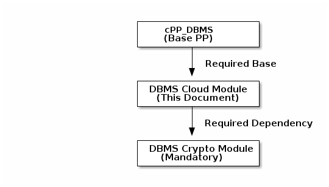

Acknowledgements
This collaborative Protection Profile Module (PP-Module) was developed by the Database Management Systems international Technical Community (iTC) also known as DBMS-iTC with representatives from industry, Government agencies, Common Criteria Test Laboratories, and members of academia. The organizations that contributed to the development of this PP-Module include:
INDUSTRY
IBM
Microsoft
Oracle Corp.
COMMON CRITERIA TEST LABORATORIES
atsec information security
Intertek EWA-Canada and Intertek Acumen
TÜViT
Teron Labs
Combitech
GOVERNMENT AGENCIES
FMV/CSEC - Swedish Certification Body for IT Security
BSI - Bundesamt für Sicherheit in der Informationstechnik
JISEC - Japan IT Security Evaluation and Certification Scheme
Revision History
| Version | Date | Description |
|---|---|---|
0.1 |
2025-03-12 |
Initial Release for iTC Review |
0.2 |
2026-01-25 |
CC:2022 Compliance Update - Improved SPD with enhanced threat descriptions and new threats (T.SECRETS_EXPOSURE, T.NETWORK_INTERCEPTION), improved assumptions, added organizational security policies (P.AUDIT_RETENTION, P.ACCESS_CONTROL_POLICY), added new objective (O.CONFIGURATION_PROTECTION), improved OE objectives with conditional triggers, complete SFR reformatting with CC:2022-compliant element numbering, explicit dependency resolution, updated conformance claims to CC:2022, added PP-Module Base section |
0.3 |
2026-06-26 |
Resolved review comments: made DBMS Crypto Module mandatory throughout, removed selection-based cryptographic remnants, aligned identification and authentication with the Base PP, corrected rationale/dependency mappings, aligned Base PP references with cPP_DBMS Version 2.0, and adopted the shared AsciiDoc PDF/HTML rendering assets. |
0.4 |
2026-06-30 |
Relocated the Data-in-Transit Protection requirement (FDP_DIT_EXT.1) to the DBMS Cryptographic Functions Module, where it is now defined as a mandatory SFR. This Cloud Module no longer defines FDP_DIT_EXT.1 or its extended component; it references the requirement inherited from the mandatory Crypto Module and identifies the cloud deployment channels (management, IAM, audit export, and external service connections) to which it applies. Version aligned with the v0.4 Crypto and DBaaS Module set. |
0.4 |
2026-07-07 |
Clarified scope to tenant-operated deployments covering both cloud-native DBMS products and lift-and-shift deployments of traditional DBMS: Preface, deployment-focus bullet, Keywords, Crypto Module rationale, TOE Description (adds the software-lifecycle administrative-authority criterion distinguishing this module from DBaaS), new Cloud-Native Deployment use case, and a Cloud-Native glossary entry. |
0.4 |
2026-07-07 |
Resolved audit SFR collisions with the Base PP via iteration: FAU_GEN.1 is now FAU_GEN.1/Cloud, scoped to cloud-specific auditable events and record content with the Base PP’s FAU_GEN.1 claimed unchanged; replaced the CC 3.1-era FAU_STG.1 text with CC:2022 FAU_STG.2, claimed as FAU_STG.2/Cloud with the modification selection completed as "prevent". Updated all rationale, dependency, and SFR List references accordingly. |
0.4 |
2026-07-08 |
Corrected APE to ACE for PP-Module evaluation under CC:2022. Added formal Base PP identification (cPP_DBMS Version 2.0, 27 April 2026) to the PP-Module Base section. Replaced the Consistency Rationale appendix, which duplicated the main-body mapping tables, with the ACE_MCO consistency demonstration: TOE type, security problem definition, security objectives, and SFRs versus the Base PP (including the FPT_ITT.1/A.CONNECT supplement analysis), and consistency with the DBMS Cryptographic Functions Module. |
0.4 |
2026-07-08 |
Added FPT_FLS.1 (CC Part 2) as a mandatory SFR of this module, replacing the incorrect attribution "FPT_FLS.1 (inherited from Base PP)" in the O.INTERNAL_RESOURCE_RESILIENCE mappings — the Base PP does not define FPT_FLS.1. The failure-type assignment is deliberately left to the ST author; the application note gives illustrative cloud failure types only, as failure modes and secure-state semantics differ across implementations. Also aligned Package Conformance with the Crypto Module’s Functional Package requirements (TLS FP v2.1, X.509 FP v1.0) instead of disclaiming package claims, and added the TLS FP, X.509 FP, and CCDB-018 bibliography entries this module’s text cites. |
0.4 |
2026-07-08 |
Security Rationale hygiene and relocation-residual cleanup: threat mappings now cite objectives rather than SFRs (T.NETWORK_INTERCEPTION to the Crypto Module’s O.PROTECTED_TRANSIT; T.SECRETS_EXPOSURE to its O.MASTER_KEY_MANAGEMENT). Dependency tables no longer analyze the inherited FDP_DIT_EXT.1’s dependencies (performed in the Crypto Module, whose TLS Functional Package claim is mandatory rather than selectable). TOE Use Case reworded from selection-era framing to mandatory protections, with scheme language generalized. Preface bullet corrected: this module identifies protected cloud channels and defines no cryptographic SFRs of its own. |
0.4 |
2026-07-08 |
Made the channel bindings for the inherited FDP_DIT_EXT.1 normative on this module’s own SFRs, following the consumer-side trusted-channel convention (cf. FAU_STG_EXT.1.2): new elements FIA_UID_EXT.1.4 (external identity provider channel) and FMT_MTD_EXT.1.3 (cloud configuration and secret management channels), mirrored in the extended component definitions. Relocated the inherited-FDP_DIT_EXT.1 description from the Security Functional Requirements (Mandatory) chapter to a new "Inherited Requirement from the DBMS Crypto Module" section, so the mandatory chapter contains exactly the SFRs this module specifies; SFR List type for the inherited requirement now reads "Inherited" rather than the undefined "Mandatory dependency". |
0.4 |
2026-07-08 |
FMT_MOF.1 application note corrected: the cloud audit authority is a read-only role and shall not be assigned management authority (previously listed among suggested authorized management roles, contradicting its FMT_SMR.1/Cloud definition). |
0.4 |
2026-07-08 |
FPT_TUD_EXT.1.3 and FPT_SBT_EXT.1.2 authenticity operations converted from open assignments to closed selections: digital signature verification (FCS_COP.1/SigVer via the DBMS Crypto Module) or hash verification against a reference value obtained via a channel protected by FDP_DIT_EXT.1 or held in modification-protected storage; the unbounded "other mechanisms" options are removed and the ECDs mirrored. FPT_SBT_EXT.1.3 application note now requires ST justification and a TSS-described recovery path when "alert administrators" is selected without "prevent boot/startup", accommodating orchestrated-recovery deployments. |
0.4 |
2026-07-08 |
Split FMT_MTD_EXT.1: its first element duplicated CC Part 2 FMT_MTD.1 and is now claimed as the iteration FMT_MTD.1/Cloud (Base PP’s FMT_MTD.1 unchanged); FMT_MTD_EXT.1 retains the cloud-specific behavior, renumbered — element 1 (protection of TSF data exchanged with cloud secret management systems, now explicitly against unauthorized disclosure and modification) and element 2 (the FDP_DIT_EXT.1 channel binding, formerly element 3). Dependencies declared consistently (iteration: FMT_SMF.1 and FMT_SMR.1; extension: FMT_SMF.1); FAU_SEL.1/Cloud’s FMT_MTD.1 dependency now resolves to the Base PP’s FMT_MTD.1 directly; rationale, dependency, SFR List, and ECD references updated. |
0.4 |
2026-07-08 |
Editorial sweep: FAU_SEL.1.1/Cloud and FPT_ITT.1.1 restored to CC:2022 Part 2 element text (unmarked deviations removed); iteration element numbering normalized (FMT_SMF.1.1/Cloud, FMT_SMR.1.1/Cloud, FMT_SMR.1.2/Cloud); Exact Conformance cites CC:2022 Part 1 directly and rule 2’s selection-based inclusion is bidirectional (shall include when implemented); examples moved from assignment placeholders to application notes (FAU_STG_EXT.1.1, FMT_MTD_EXT.1.1, FPT_SBT_EXT.1.1); added OE.AUTHORIZED_ADMINISTRATORS so A.AUTHORIZED_ADMINISTRATORS is upheld by operational environment objectives only; reconciled the T.SECRETS_EXPOSURE mapping across the rationale copies; A.TIME_SYNCHRONIZATION stated normatively once; unused DEK/KEK glossary and acronym entries removed; SD bibliography reference pinned to Version 0.4; ECD appendix introduction corrected. |
0.4 |
2026-07-20 |
Aligned cloud external-key integration text with the Crypto Module’s four Key Origins and role-specific ML-KEM model. Cloud services may provision keys or exchange KEM values, but the ST claims only TOE-boundary KeyGen, encapsulation, or decapsulation operations; KEM-derived Master Keys use |
0.5 |
2026-07-20 |
Rolled the coordinated module set to Version 0.5 after closure of the public-review priority findings. Retains the role-specific ML-KEM allocation and the separation between tenant-operated cloud deployments and provider-operated DBaaS deployments. |
Preface
This PP-Module, the DBMS in the Cloud Module, extends the collaborative Protection Profile for Database Management Systems (cPP_DBMS) to support secure deployment of DBMS products in cloud environments. It is intended to address tenant-operated deployments on infrastructure- or platform-as-a-service (IaaS/PaaS) offerings in public or private clouds, whether the DBMS is a cloud-native product designed for cloud deployment or a traditional DBMS deployed using a lift-and-shift strategy.
This module is aligned with the architectural concepts defined by the Common Criteria in the Cloud Technical Community (CCiTC), as described in the "Guidance for Cloud Evaluations" v1.1 publication. In particular, this module recognizes a Trusted Platform — the cloud infrastructure and services outside the TOE boundary on which the TOE relies to satisfy operational environment assumptions and objectives. The composition of the TOE, TOE Platform, Trusted Platform, and other operational environment components depends on the evaluated architecture and shall be identified in the ST.
The DBMS in the Cloud Module is focused on scenarios where:
-
The TOE is not operated or managed by the cloud provider. It may be a cloud-native DBMS or a traditional DBMS that is functionally equivalent to its on-premises version.
-
The TOE is installed, configured, and administered by the customer (tenant) or a delegated administrator.
-
The TOE may be deployed using containers, virtual machine images, or native installation on cloud-provisioned compute resources.
-
The operational environment provides cloud-native identity, audit, and configuration management services with which the TOE may integrate.
This PP-Module is not intended for Database-as-a-Service (DBaaS) offerings, where the cloud provider operates and manages the DBMS on behalf of tenants. A separate PP-Module will define requirements for DBaaS environments and is expected to require conformance to the cPP_DBMS, the DBMS Crypto Module, and additional DBaaS-specific interface controls via a PP-Configuration.
This Cloud Module introduces SFRs to support:
-
Integration with cloud-native identity and access management (IAM) systems
-
Secure consumption of cloud-based secrets and configuration data
-
Export of audit logs to cloud-native observability and logging platforms
-
Monitoring of trusted update status and claimed TOE integrity checks, with alerting on failure or misconfiguration
-
Identification of the cloud deployment channels protected by the mandatory DBMS Crypto Module’s data-in-transit requirement (this module defines no cryptographic SFRs of its own)
This PP-Module does not stand alone. It must be claimed in conjunction with:
-
The cPP_DBMS (Base PP)
-
The DBMS Crypto Module
By layering this PP-Module with the cPP_DBMS and the required Crypto Module, vendors and evaluators can support secure, standards-based assurance for DBMS products deployed in modern cloud environments without conflating service provider responsibilities with product-level evaluation scope.
Objectives of Document
This document presents the Common Criteria (CC) collaborative Protection Profile Module (PP-Module) to express the security functional requirements (SFRs) and security assurance requirements (SARs) for Database Management Systems deployed in cloud environments. The Evaluation activities that specify the actions the evaluator performs to determine if a product satisfies the SFRs captured within this PP-Module, are described in [SD].
Scope of Document
The scope of the PP-Module within the development and evaluation process is described in the Common Criteria for Information Technology Security Evaluation, CC:2022. In particular, a PP-Module defines the IT security requirements of a generic type of TOE and specifies the functional security measures to be offered by that TOE to meet stated requirements [[CC1], Section B.14].
Intended Readership
The target audiences of this PP-Module are developers, CC consumers, system integrators, evaluators and schemes.
Although the PP-Module and SD may contain minor editorial errors, the PP-Module is recognized as living document and the iTC is dedicated to ongoing updates and revisions. Please report any issues to the DBMS-iTC.
Related Documents
-
[CC1] Common Criteria for Information Technology Security Evaluation, Part 1: Introduction and general model, CCMB-2022-11-001, CC:2022 Revision 1, November 2022.
-
[CC2] Common Criteria for Information Technology Security Evaluation, Part 2: Security functional requirements, CCMB-2022-11-002, CC:2022 Revision 1, November 2022.
-
[CC3] Common Criteria for Information Technology Security Evaluation, Part 3: Security assurance requirements, CCMB-2022-11-003, CC:2022 Revision 1, November 2022.
-
[CC4] Common Criteria for Information Technology Security Evaluation, Part 4: Framework for the specification of evaluation methods and activities, CCMB-2022-11-004, CC:2022 Revision 1, November 2022.
-
[CC5] Common Criteria for Information Technology Security Evaluation, Part 5: Pre-defined packages of security requirements, CCMB-2022-11-005, CC:2022 Revision 1, November 2022.
-
[CCE] Common Criteria for Information Technology Security Evaluation, Errata and interpretation for CC:2022 (Release 1) and CEM:2022 (Release 1), CCMB-002, Version 1.1, July 22, 2024.
-
[CEM] Common Methodology for Information Technology Security Evaluation, Evaluation methodology, CCMB-2022-11-006, CEM:2022 Revision 1, November 2022.
-
[SD] Supporting Document - Evaluation Activities for DBMS in the Cloud Module, Version 0.5.
-
[cPP_DBMS] collaborative Protection Profile for Database Management Systems, Version 2.0, 27 April 2026.
-
[cPP_DBMS_SD] Supporting Document Mandatory Technical Document Evaluation Activities for the collaborative Protection Profile for Database Management Systems, Version 2.0, 27 April 2026.
-
[DBMS_MOD_CRYPTO] collaborative PP-Module for DBMS Cryptographic Functions, Version 0.5.
-
[DBMS_MOD_CRYPTO_SD] Supporting Document - Evaluation Activities for DBMS Cryptographic Functions Module, Version 0.5.
-
[TLS_FP] Functional Package for Transport Layer Security (TLS), Version 2.1, 2025-08-25. Available at commoncriteria.github.io/tls.
-
[X509_FP] Functional Package for X.509 Certificates, Version 1.0. Available at commoncriteria.github.io/X509.
-
[Crypto_Catalog] Specification of Functional Requirements for Cryptography (CCDB-018), Version 1.0, January 2025. Available at commoncriteria/crypto-catalog and commoncriteriaportal.org.
For more information, see the Common Criteria Portal.
1. PP-Module Introduction
1.1. PP-Module Reference Identification
This section provides the formal identification of this PP-Module per ACE_INT requirements.
| Attribute | Value |
|---|---|
PP-Module Title |
collaborative PP-Module for DBMS in the Cloud |
PP-Module Short Name |
DBMS_Cloud_MOD |
PP-Module Version |
0.5 |
PP-Module Publication Date |
2026-07-20 |
PP-Module Sponsor |
Database Management Systems international Technical Community (DBMS-iTC) |
CC Version |
CC:2022 |
PP-Module Keywords |
Database, DBMS, Cloud, IaaS, PaaS, Cloud-Native, Lift-and-Shift |
2. PP-Module Base
This section specifies the Base PP(s) that must be used in conjunction with this PP-Module and defines the allowed PP-Configurations, per CC:2022 requirements for PP-Module conformance claims.
2.1. Base PP Identification
The Base PP of this PP-Module is:
-
collaborative Protection Profile for Database Management Systems (cPP_DBMS), Version 2.0, 27 April 2026 [[cPP_DBMS]].
Together with the required DBMS Cryptographic Functions Module identified below, the cPP_DBMS constitutes the base against which the consistency of this PP-Module is demonstrated in Consistency Rationale.
2.2. Required Modules
This PP-Module requires the following PP-Module to be claimed in conjunction with the Base PP:
-
PP-Module for DBMS Cryptographic Functions (DBMS_MOD_CRYPTO) [[DBMS_MOD_CRYPTO]]
Rationale: Deploying a tenant-operated DBMS in a cloud environment, whether cloud-native or lift-and-shift, exposes management interfaces, audit channels, and IAM integration traffic to shared cloud networks. Data-in-Transit protection using TLS, including HTTPS over TLS where applicable, is therefore a mandatory baseline security property. The DBMS Crypto Module provides the necessary Security Functional Requirements (SFRs) for this protection.
Note: The Crypto Module is mandatory. Data-at-rest protection for Cloud PP-Configurations is satisfied through the Crypto Module’s FDP_DAR_EXT.1 requirement, where the ST author selects the applicable strategy ("Storage-Scope Encryption" or "Granular Data Encryption") and includes the corresponding Catalogue-derived components consumed in that module. Cloud provider storage controls may be described as supplemental environmental support, but they do not replace the mandatory Crypto Module.
2.3. Allowed PP-Configurations
The only allowed PP-Configuration for this module is:
-
cPP_DBMS + DBMS Cloud Module + DBMS Cryptographic Module
This configuration is required for all evaluations. It ensures that the TOE provides:
-
Data-in-Transit Protection: Mandatory for all cloud deployments to protect management traffic and service integrations (provided by the Crypto Module).
-
Data-at-Rest Protection: The TOE claims the applicable Data-at-Rest Encryption strategy through the Crypto Module. Cloud platform storage encryption may support the deployment, but it does not satisfy this requirement unless the ST explicitly includes the relevant mechanism within the TOE/TSF boundary and evaluates it through the Crypto Module claims.
-
Any PP-Configuration claiming this PP-Module that does not include the DBMS Cryptographic Module is not valid.
2.4. PP-Module Relationship Diagram

2.5. Future Modules
The following PP-Modules are planned for future development:
-
DBMS DBaaS Module [DBMS_MOD_DBAAS] - Will extend scope for Database-as-a-Service deployments where the cloud provider operates and manages the DBMS on behalf of tenants. This module is expected to require conformance to the cPP_DBMS, the DBMS Crypto Module, and additional DBaaS-specific interface controls.
3. TOE Overview
This PP-Module applies to Database Management Systems (DBMS) deployed in cloud environments. The Target of Evaluation (TOE) is the DBMS software itself when deployed by the customer or tenant on infrastructure-as-a-service (IaaS) or platform-as-a-service (PaaS) offerings provided by public or private cloud providers.
3.1. TOE Type
The TOE type addressed by this PP-Module is: Database Management Systems deployed in cloud environments.
3.2. TOE Description
The TOE is a DBMS deployed and administered by the end user (tenant), not by the cloud service provider. It may be a cloud-native DBMS designed for cloud deployment or a traditional DBMS that is functionally equivalent to its on-premises version, and it may be delivered as a binary package, virtual machine image, or containerized application. This PP-Module does not apply to database-as-a-service (DBaaS) offerings operated by the cloud provider; those deployments are out of scope and will be addressed in a separate PP-Module. The distinguishing criterion is administrative authority over the DBMS software lifecycle (installation, patching, version selection, and instance configuration): where the tenant holds that authority, this module applies; where the cloud provider holds it, the deployment is a DBaaS offering.
The TOE is hosted in a cloud operational environment that includes a Trusted Platform. Depending on the evaluated architecture, Trusted Platform services may include:
-
Compute, storage, and network resources provisioned via the cloud control plane
-
Orchestration and deployment systems (e.g., Kubernetes, Terraform)
-
Cloud-native identity and access management (IAM) systems
-
Secret management, logging, monitoring, or other managed services
This list is illustrative and does not establish a fixed boundary. A cloud service may be part of the TOE, TOE Platform, Trusted Platform, or another operational environment component according to the evaluated configuration and the security behavior it provides. Trusted Platform properties relied upon by the TOE are captured in the assumptions and Operational Environment objectives defined by this module.
3.3. TOE Scope
The TOE may include:
-
The DBMS application software and any tightly integrated subsystems
-
Interfaces used to configure and manage security-relevant behavior (e.g., authentication settings, audit policy)
-
Internal communications between distributed DBMS components (e.g., nodes in a cluster)
-
Any embedded runtime used to bootstrap or orchestrate the DBMS (e.g., scripts, sidecar services)
The following are typically outside the TOE unless the ST explicitly includes them in the TOE boundary and applies the applicable evaluation activities:
-
The Trusted Platform, including the hypervisor, cloud control plane, and underlying hardware
-
Cloud-native IAM services, monitoring systems, and key vaults (though the TOE may integrate with them)
-
Third-party cryptographic modules unless explicitly claimed via the DBMS Crypto Module
This module requires the TOE to include the DBMS Crypto Module as defined in its associated PP-Configuration. Data-in-transit protections are mandatory for the cloud deployment channels covered by this module, and data-at-rest encryption is specified by the DBMS Crypto Module.
3.4. Security Function Allocation
This PP-Module does not prescribe a single implementation boundary for every conformant database architecture. Provider ownership, use of a managed service, or deployment on shared infrastructure does not by itself determine whether a component is part of the TOE, TOE Platform, Trusted Platform, or another operational environment component.
The ST shall identify each component or service that implements or supports security behavior relevant to a claimed SFR and shall identify:
-
its allocation to the TOE, TOE Platform, Trusted Platform, or another operational environment component;
-
the security behavior performed by the TOE and any security property relied upon from an external component;
-
the interface through which the TOE uses the component or service; and
-
the applicable SFR, assumption, or Operational Environment objective.
A claimed SFR shall not be satisfied solely by Trusted Platform evidence. Where an SFR, selection, or Application Note permits the TOE to use a platform-provided mechanism, the TSS shall distinguish the TSF behavior being evaluated from the external property on which that behavior relies.
This PP-Module defines the Trusted Platform properties needed by the evaluated configuration but does not prescribe which cloud authorization, certification, or other evidence is acceptable. The evaluation authority determines the acceptance criteria for Trusted Platform evidence under the applicable scheme policy.
3.5. Major Security Features
The TOE provides the following major security features:
-
Cloud Identity Integration: Integration with external cloud-native identity and access management (IAM) systems for user authentication and role mapping.
-
Cloud Audit Integration: Generation of audit records with support for export to cloud-native or tenant-managed audit collection systems.
-
Elastic Environment Resilience: Maintenance of security properties in ephemeral, scaled, or orchestrated cloud deployments.
-
Trusted Update and Deployment Integrity: Verification of TOE updates, with startup or deployment artifact verification when
FPT_SBT_EXT.1is claimed. -
Secure Configuration Management: Protection of TSF data stored in cloud-native configuration and secret management systems.
4. TOE Use Case
This section describes representative deployment scenarios for the TOE, illustrating the practical necessity of the mandatory cryptographic protections provided through the DBMS Crypto Module. The scenarios justify the enforcement of Data-in-Transit (DIT) and Data-at-Rest Encryption (D@RE) as mandatory requirements of the PP-Configuration, supporting certification under national schemes, including NIAP Product Compliant List (PCL) listing where applicable.
4.1. Cloud Deployment Scenario (Public Cloud IaaS)
The TOE is deployed by an enterprise customer using a "lift-and-shift" strategy onto a public cloud provider’s infrastructure-as-a-service (IaaS) offering. The deployment consists of:
-
A DBMS installed on cloud-provisioned virtual machine instances or containers.
-
Persistent database storage provisioned using cloud-managed storage volumes.
-
Administrative and user interactions with the DBMS conducted remotely over untrusted public networks.
In this scenario, the following cryptographic protections are essential:
-
Data-in-Transit Protection (DIT): Administrative interfaces and API endpoints are exposed externally for remote management and access. Without cryptographic protections, administrative credentials, queries, and results transmitted across the network are vulnerable to interception or manipulation. Required protection: TLS, including HTTPS over TLS where applicable, as required by the inherited
FDP_DIT_EXT.1and the applicable TLS and X.509 Functional Packages. -
Data-at-Rest Encryption (D@RE): Sensitive or regulated data (e.g., customer PII, financial data, or intellectual property) is stored persistently within cloud-managed storage volumes. Without encryption, data confidentiality is at risk if underlying storage is compromised or accessed by unauthorized parties. Required protection: Encryption of persistent data storage as required by
FDP_DAR_EXT.1, defined in the DBMS Crypto Module.
This use case illustrates the practical necessity of the cryptographic requirements defined in the DBMS Crypto Module. A TOE claiming conformance to this PP-Module receives these protections as mandatory requirements of its PP-Configuration.
4.2. Cloud-Native Deployment Scenario (Tenant-Operated Containers/PaaS)
The TOE is a cloud-native DBMS deployed by an enterprise customer onto tenant-managed container orchestration or platform-as-a-service (PaaS) infrastructure. The TOE has no on-premises predecessor; it is designed for elastic, orchestrated cloud deployment. The deployment consists of:
-
DBMS instances deployed as containers or managed processes under tenant-controlled orchestration (e.g., Kubernetes).
-
Persistent database storage provisioned using cloud-managed storage classes or volumes.
-
Administrative and user interactions conducted remotely, with authentication integrated with cloud-native IAM services.
The tenant retains administrative authority over the DBMS software lifecycle: installation, version selection, patching, and instance configuration. The cryptographic protections identified in the lift-and-shift scenario apply identically: management, IAM, audit export, and client channels require Data-in-Transit protection as specified in FDP_DIT_EXT.1, and persistent storage requires Data-at-Rest Encryption as specified in FDP_DAR_EXT.1, both defined in the DBMS Crypto Module.
Application Note: These Cloud deployment use cases do not automatically select the Crypto Module’s optional [USE CASE 2] Enterprise Enhanced. An ST may claim Enterprise Enhanced for a Cloud PP-Configuration when the deployment requires its FIPS 140-3, NIAP, and CNSA 2.0-aligned cryptographic selections; the ST then follows the selection template defined entirely by the Crypto Module.
5. CC Conformance Claims
This section describes the conformance claims for this PP-Module per ACE_CCL requirements defined in CC:2022. As a PP-Module, this document is evaluated under the ACE assurance class within the evaluation of a PP-Configuration that includes it.
5.1. Common Criteria Conformance
This PP-Module claims conformance to the Common Criteria for Information Technology Security Evaluation, CC:2022, as follows:
-
CC Part 1 Conformance: This PP-Module is consistent with CC:2022 Part 1 [[CC1]].
-
CC Part 2 Conformance: This PP-Module is CC Part 2 extended, as it includes extended SFR components defined in Extended Component Definitions.
-
CC Part 3 Conformance: This PP-Module is CC Part 3 conformant, as it does not define extended SAR components.
5.2. Package Conformance
A PP-Configuration including this PP-Module inherits the cPP_DBMS claim of conformance to the EAL2 assurance package defined in CC:2022 Part 5 [[CC5]], augmented by ALC_FLR.3 Systematic flaw remediation. This PP-Module does not introduce additional assurance package claims.
This PP-Module defines no functional package claims of its own. The mandatory DBMS Cryptographic Functions Module [[DBMS_MOD_CRYPTO]] requires a conforming Security Target to claim the Functional Package for Transport Layer Security (TLS), Version 2.1 [[TLS_FP]], and, where certificate-based endpoint authentication applies, the Functional Package for X.509 Certificates, Version 1.0 [[X509_FP]], per that module’s Package Conformance section; those claims cover the cloud deployment channels this module identifies for FDP_DIT_EXT.1.
5.3. PP-Module Conformance Type
This PP-Module requires Exact Conformance from Security Targets claiming conformance.
5.3.1. Definition of Exact Conformance
Exact Conformance is defined in CC:2022 Part 1 [[CC1]]. A Security Target demonstrating Exact Conformance to this PP-Module must satisfy the following requirements:
-
Mandatory SFRs: The ST shall include all SFRs specified in Security Functional Requirements (Mandatory) of this PP-Module.
-
Selection-Based SFRs: The ST shall include SFRs from Selection-Based Requirements when selections in mandatory SFRs trigger their inclusion, and shall include a selection-based SFR when the TOE implements the corresponding functionality.
-
Optional SFRs: This PP-Module defines no optional SFRs; therefore, there are no optional SFRs from this PP-Module to include in the ST.
-
No Additional Requirements: While iteration is allowed, the ST shall not include additional requirements from CC Part 2 [[CC2]], CC Part 3 [[CC3]], or definitions of extended components not already included in this PP-Module, the Base PP (cPP_DBMS), or another module in the claimed PP-Configuration.
-
No Omissions: No mandatory SFRs from Security Functional Requirements (Mandatory) may be omitted from the ST.
-
Iteration Permitted: Iteration of SFRs is permitted to address multiple instances of a security requirement when necessary.
-
Operations: All assignments, selections, and refinements shall be completed in accordance with the SFR specifications in this PP-Module and the Base PP.
5.4. Conformance Claim Rationale
A Security Target or PP claiming conformance to this PP-Module shall include:
-
A statement identifying this PP-Module by title, version, and publication date.
-
A statement that the claimed PP-Configuration includes the required Base PP (cPP_DBMS).
-
A statement that the claimed PP-Configuration includes the DBMS Cryptographic Module.
-
A statement that the ST demonstrates Exact Conformance to this PP-Module.
6. Security Problem Definition
This section defines the security environment applicable to the TOE when deployed in a cloud environment. It is aligned with the CC in the Cloud Technical Community’s model of a Trusted Platform and elastic, multitenant deployments.
The Security Problem Definition identifies threats that the TOE must counter, assumptions about the operational environment that must hold true for the TOE to operate securely, and organizational security policies that the TOE must enforce.
6.1. Threats
This section describes the threats that the TOE is designed to address. Each threat identifies the threat agent, the adverse action, and the asset being protected, in accordance with CC:2022 requirements.
- T.ELASTIC_ENVIRONMENT
-
A malicious actor or an inadvertent system failure may exploit the dynamic, virtualized nature of cloud environments to cause the TOE to behave unpredictably or enter an insecure state. This may occur through manipulation of deployment topology changes, exploitation of ephemeral instance lifecycle events, or interference with scaling operations. The assets at risk include the TOE’s security configuration, runtime state, and the confidentiality and integrity of protected data.
- T.MALICIOUS_TENANT_ADMIN
-
An authorized administrator or orchestrator may intentionally or accidentally misconfigure the TOE, weaken security controls, or expose sensitive data. The TOE must enforce appropriate access control boundaries even when deployed by the tenant.
- T.UNAUTHORIZED_ACCESS
-
An unauthorized user, including one with access to the underlying cloud infrastructure or control plane, may attempt to access TOE functionality or data without proper authentication or authorization.
- T.INTEGRITY_FAILURE
-
A malicious actor may attempt to compromise the integrity of the TOE through tampered updates, unauthorized runtime components, or deployment artifacts presented to TOE-side verification mechanisms. In a cloud context, image selection, registry integrity, template approval, and orchestration controls before TOE execution are primarily responsibilities of the operational environment. When the TOE claims
FPT_SBT_EXT.1, this threat also includes TOE-side detection of tampered startup or deployment artifacts. The assets at risk include the TOE executable code, configuration data, and the trustworthiness of the deployed instance. - T.AUDIT_FAILURE
-
A malicious actor may attempt to interfere with the TOE’s audit mechanisms to conceal unauthorized activities or security violations. The threat agent may exploit failures in audit generation, local buffering, or export mechanisms, particularly taking advantage of the ephemeral nature of cloud instances. Alternatively, system failures in elastic cloud environments may inadvertently cause loss of audit data. The assets at risk include audit records necessary for security monitoring, incident investigation, and regulatory compliance.
- T.SECRETS_EXPOSURE
-
A malicious actor may attempt to obtain cloud secrets, credentials, API keys, or other sensitive authentication material used by or stored within the TOE. The threat agent may exploit insecure secret storage, improper handling of environment variables, memory disclosure vulnerabilities, or unauthorized access to cloud secret management services. The assets at risk include database credentials, service account keys, encryption keys, and any other secrets that could enable unauthorized access to the TOE or its data.
- T.NETWORK_INTERCEPTION
-
A malicious actor may attempt to intercept, modify, or inject data into communications between distributed TOE components or between the TOE and external services. In cloud environments, the threat agent may exploit shared network infrastructure, misconfigured network policies, or compromised adjacent workloads to perform network-based attacks. The assets at risk include TSF data transmitted between TOE nodes, management plane communications, and data exchanged with cloud-native services.
6.2. Assumptions
This section describes the assumptions about the operational environment that must be satisfied for the TOE to provide its security functionality. If these assumptions are not met, the TOE cannot be expected to operate securely.
- A.TRUSTED_PLATFORM
-
The underlying cloud environment — including compute, network, storage, and orchestration infrastructure — is assumed to be a Trusted Platform as defined by the CCiTC model. Specifically, the platform must:
-
Enforce isolation between tenants such that one tenant cannot access another tenant’s compute resources, memory, storage, or network traffic;
-
Protect the integrity of virtual machine or container boundaries against escape or breakout attacks;
-
Provide accurate and unmodifiable identity assertions and policy information to the TOE;
-
Implement resource allocation controls that prevent denial-of-service by co-located workloads.
This assumption aligns with the CCiTC Trusted Platform model and establishes the minimum isolation requirements for secure TOE operation.
-
- A.SECURE_DEPLOYMENT
-
The TOE is deployed using an approved, authentic, and correctly configured image or installation method. Any orchestration system used must respect the security policies and runtime parameters defined for the TOE. Specifically:
-
The deployment process must verify the cryptographic signature or hash of TOE artifacts before installation;
-
Configuration management tools must validate configuration parameters against a defined security baseline;
-
Deployment logs must be generated and retained to support post-deployment verification;
-
The deployment pipeline must be protected against unauthorized modification.
-
- A.CLOUD_SERVICE_INTEGRITY
-
The cloud-native services that the TOE integrates with — such as IAM, key vaults, logging services, and configuration management systems — are assumed to operate correctly and provide accurate, untampered data to the TOE under normal operating conditions. In the event of partial service failures:
-
The TOE will detect service unavailability through timeout or error responses;
-
The TOE will fail securely by denying operations that depend on unavailable services rather than falling back to insecure defaults;
-
The cloud provider will restore service availability within documented service level agreements.
This assumption does not extend to scenarios where cloud services are actively compromised by sophisticated threat actors.
-
- A.AUTHORIZED_ADMINISTRATORS
-
Personnel with administrative access to the TOE, including tenant administrators and cloud audit authorities, are assumed to be:
-
Appropriately vetted according to organizational security policies;
-
Trained in the secure operation of the TOE and its cloud deployment environment;
-
Bound by organizational policies that define acceptable use and prohibited actions;
-
Subject to accountability mechanisms including activity logging and periodic access reviews.
This assumption does not preclude the possibility of insider threats but establishes that basic personnel security controls are in place.
-
- A.TIME_SYNCHRONIZATION
-
The cloud platform provides reliable time synchronization services to the TOE, ensuring that:
-
All TOE instances receive accurate time from a trusted source (e.g., cloud provider NTP service);
-
Time drift between TOE instances and cloud services remains within acceptable bounds for cryptographic operations and audit timestamp accuracy;
-
The TOE can rely on consistent timestamps for audit record generation, certificate validation, and time-based access controls.
-
6.3. Organizational Security Policies
This section defines the organizational security policies that the TOE must support or enforce. These policies represent security rules that organizations deploying the TOE are expected to implement.
- P.AUDIT_RETENTION
-
The organization shall define and enforce audit record retention policies that specify:
-
The minimum retention period for audit records based on regulatory requirements (e.g., GDPR, HIPAA, PCI-DSS, SOX) and organizational security policies;
-
The storage location and protection requirements for retained audit records;
-
Procedures for secure disposal of audit records after the retention period expires;
-
Requirements for audit record availability during incident investigations or compliance audits.
The TOE must support the export of audit records to enable organizations to implement their retention policies using cloud-native or external audit storage solutions.
-
- P.ACCESS_CONTROL_POLICY
-
The organization shall implement role-based access control with least-privilege principles for all TOE access. Specifically:
-
Each user and service account shall be assigned to defined roles with explicitly documented privileges;
-
Privileges shall be limited to the minimum necessary for users to perform their authorized functions;
-
Administrative privileges shall be separated from regular user privileges;
-
Access control decisions shall be logged for accountability;
-
Role assignments shall be reviewed periodically and adjusted as organizational needs change.
The TOE must provide mechanisms to define roles, assign users to roles, and enforce access control decisions based on role membership.
-
7. Security Objectives
This section defines the security objectives that address the threats, assumptions, and organizational security policies identified in the Security Problem Definition. Security objectives for the TOE describe what the TOE must do to counter threats and enforce policies. Security objectives for the Operational Environment describe what the environment must provide to support the TOE’s security functionality.
7.1. Security Objectives for the TOE
- O.CLOUD_IDENTITY_INTEGRATION
-
The TOE shall integrate with external cloud-native identity and access management (IAM) systems to support user identification and authentication required by the Base PP. The TOE shall verify identity assertions from external providers and map externally asserted identities, roles, and attributes to TOE-defined roles used for access control decisions.
- O.CLOUD_AUDIT_INTEGRATION
-
The TOE shall generate audit records for security-relevant events and support export to cloud-native or tenant-managed audit collection systems to ensure observability and accountability. Audit records shall capture sufficient detail to support forensic analysis and compliance verification.
- O.INTERNAL_RESOURCE_RESILIENCE
-
The TOE shall detect and signal disruptions affecting its distributed components, protect internal communications from disclosure and modification, and continue secure operation or fail securely when deployed in ephemeral, scaled, or orchestrated cloud environments. The TOE shall not claim to maintain full availability but shall ensure that security properties are preserved or that failure is handled in a manner that does not compromise the security posture.
Application Note: This objective focuses on detection, signaling, and fail-secure behavior rather than claiming to maintain confidentiality, integrity, and availability in all circumstances. The TOE provides awareness of disruptions and protects its internal data transfers, but availability guarantees depend on the operational environment (OE.TRUSTED_PLATFORM).
- O.CLOUD_DEPLOYMENT_INTEGRITY
-
The TOE shall verify the authenticity and integrity of TOE updates before installation. The TOE shall verify its runtime state or startup/deployment artifacts only when the corresponding verification capability is claimed in the ST, such as
FPT_TST.1self-test orFPT_SBT_EXT.1secure boot and image verification. Approved artifact selection, registry integrity, and orchestration before TOE execution are responsibilities of the operational environment throughOE.SECURE_ORCHESTRATION. - O.CONFIGURATION_PROTECTION
-
The TOE shall protect security-critical configuration from unauthorized or improper modification. The TOE shall enforce role-based restrictions on administrative actions affecting security functions and TSF data, preventing tenant administrators from weakening security controls beyond authorized limits.
Application Note: This objective directly addresses the threat of malicious or negligent tenant administrators (T.MALICIOUS_TENANT_ADMIN) who may attempt to weaken security configurations. The TOE must distinguish between legitimate administrative actions and those that would compromise security, enforcing appropriate restrictions based on assigned roles.
7.2. Security Objectives for the Operational Environment
- OE.AUTHORIZED_ADMINISTRATORS
-
The organization deploying the TOE shall ensure that personnel with administrative access are appropriately vetted, trained in the secure operation of the TOE and its cloud deployment environment, and bound by organizational policies defining acceptable use. This objective upholds A.AUTHORIZED_ADMINISTRATORS through organizational personnel controls in the operational environment.
- OE.TRUSTED_PLATFORM
-
The platform on which the TOE is deployed (including the hypervisor, control plane, and IAM services) shall enforce tenant isolation, protect compute and storage resources, and provide trusted identity and configuration assertions. The Trusted Platform is responsible for availability of underlying resources and correct operation of infrastructure services.
- OE.SECURE_ORCHESTRATION
-
Any orchestration toolchain or deployment service used to provision the TOE (e.g., Terraform, Helm, cloud-init) shall use authentic and approved TOE artifacts and preserve security-relevant configuration parameters. Orchestration systems shall not introduce unauthorized modifications to the TOE configuration.
- OE.LOGGING_SERVICES
-
The operational environment shall provide a trusted logging pipeline or SIEM that reliably receives and stores exported audit records from the TOE. The logging service shall protect audit data from unauthorized modification or deletion.
Application Note: This objective supports FAU_STG_EXT.1, which is mandatory for this PP-Module. The TOE protects export of audit records to the logging service; the operational environment protects audit records after receipt.
- OE.IDENTITY_PROVIDERS
-
The operational environment shall provide the external identity providers selected in FIA_UID_EXT.1. Each identity provider shall issue correct, verifiable assertions consumed by the TOE, authenticate users according to organizational policy, and provide accurate role and attribute information, including cloud IAM roles or federated directory attributes used by the TOE for role mapping.
Application Note: This objective is mandatory for this PP-Module because FIA_UID_EXT.1 is mandatory. The ST author identifies the supported external identity sources through the FIA_UID_EXT.1 selections and assignments.
- OE.SECRETS_MANAGEMENT
-
The operational environment shall ensure that secrets provided to the TOE are authentic and protected from unauthorized disclosure while outside the TOE boundary. This includes API tokens, database connection strings, and cryptographic key material made available through external secret management or key management services.
If the TOE imports, externally manages, or establishes Master Keys with an external entity under
FCS_CKM_EXT.1of the DBMS Crypto Module, the secret management or key management service shall securely provide the applicable keys, references, encapsulation keys, or KEM ciphertexts to the TOE via the trusted channel defined byFDP_ITC_EXT.1in the DBMS Crypto Module.Conditional Trigger: This objective applies when the TOE integrates with cloud-native secret management systems or when the "Imported from External Entity", "Externally Managed", or "Established through Key Encapsulation" origin is selected in
FCS_CKM_EXT.1of the DBMS Crypto Module.Application Note: This objective distinguishes between environmental protection of secret stores and TOE protection after retrieval or establishment. The operational environment protects external secret stores and any ML-KEM operation allocated outside the TOE. FMT_MTD_EXT.1 addresses TOE handling of cloud-stored configuration and secrets once retrieved. The lifecycle of Data-at-Rest Master Keys, including derivation from a TOE-established ML-KEM shared secret, is governed by
FCS_CKM_EXT.1and the related components in the mandatory DBMS Crypto Module. Protocol-level ML-KEM, including hybrid TLS, is governed by the applicable Functional Package.
8. Security Rationale
This section provides rationale showing how the defined security objectives address the identified threats, assumptions, and organizational security policies, and how the Security Functional Requirements (SFRs) in this module satisfy the objectives. The rationale demonstrates completeness and consistency of the security problem definition, objectives, and requirements.
8.1. Threats to Objectives Mapping
The following table maps each threat to the security objectives that address it. Each threat must be fully addressed by the combination of TOE objectives and operational environment objectives.
| Threat | Security Objectives Addressing the Threat | Rationale |
|---|---|---|
T.ELASTIC_ENVIRONMENT |
O.INTERNAL_RESOURCE_RESILIENCE |
The TOE detects and signals disruptions, protects internal communications, and fails securely (O.INTERNAL_RESOURCE_RESILIENCE). The platform ensures resource protection and isolation (OE.TRUSTED_PLATFORM). Orchestration preserves security parameters across deployments (OE.SECURE_ORCHESTRATION). |
T.MALICIOUS_TENANT_ADMIN |
O.CLOUD_IDENTITY_INTEGRATION |
The TOE enforces proper authentication and role mapping (O.CLOUD_IDENTITY_INTEGRATION), records administrative actions for accountability (O.CLOUD_AUDIT_INTEGRATION), and restricts configuration changes to authorized roles (O.CONFIGURATION_PROTECTION). Orchestration systems respect security policies (OE.SECURE_ORCHESTRATION). |
T.UNAUTHORIZED_ACCESS |
O.CLOUD_IDENTITY_INTEGRATION |
The TOE verifies user authentication via cloud IAM (O.CLOUD_IDENTITY_INTEGRATION). The platform enforces tenant isolation (OE.TRUSTED_PLATFORM). Identity providers supply accurate assertions (OE.IDENTITY_PROVIDERS). |
T.INTEGRITY_FAILURE |
O.CLOUD_DEPLOYMENT_INTEGRITY |
The TOE verifies trusted updates and any claimed runtime or startup/deployment integrity checks (O.CLOUD_DEPLOYMENT_INTEGRITY). Orchestration uses authentic and approved artifacts before TOE execution (OE.SECURE_ORCHESTRATION). The platform protects compute resources (OE.TRUSTED_PLATFORM). |
T.AUDIT_FAILURE |
O.CLOUD_AUDIT_INTEGRATION |
The TOE generates audit records and supports export (O.CLOUD_AUDIT_INTEGRATION). The OE provides reliable audit storage (OE.LOGGING_SERVICES). |
T.SECRETS_EXPOSURE |
O.CONFIGURATION_PROTECTION |
The TOE protects security-critical configuration including credential handling (O.CONFIGURATION_PROTECTION). The OE ensures external secret stores are authentic and protected (OE.SECRETS_MANAGEMENT) and the platform protects the underlying storage resources (OE.TRUSTED_PLATFORM). The mandatory DBMS Crypto Module’s O.MASTER_KEY_MANAGEMENT covers the Master Key lifecycle (satisfied there by FCS_CKM_EXT.1, with FDP_ITC_EXT.1 protecting the channel when an external Key Origin is selected). |
T.NETWORK_INTERCEPTION |
O.INTERNAL_RESOURCE_RESILIENCE |
The TOE protects internal communications from disclosure and modification (O.INTERNAL_RESOURCE_RESILIENCE). The platform provides network isolation (OE.TRUSTED_PLATFORM). External network protection (e.g., Client-to-DB, DB-to-KMS) is covered by the mandatory DBMS Crypto Module’s O.PROTECTED_TRANSIT, satisfied there by FDP_DIT_EXT.1; this module identifies the cloud deployment channels to which it applies. |
8.2. Assumptions to Objectives Mapping
The following table maps each assumption to the operational environment objectives that uphold it.
| Assumption | OE Objectives Upholding the Assumption | Rationale |
|---|---|---|
A.TRUSTED_PLATFORM |
OE.TRUSTED_PLATFORM |
The operational environment objective OE.TRUSTED_PLATFORM directly requires the platform to enforce tenant isolation, protect resources, and provide trusted identity assertions, which are the exact properties assumed in A.TRUSTED_PLATFORM. |
A.SECURE_DEPLOYMENT |
OE.SECURE_ORCHESTRATION |
The operational environment objective OE.SECURE_ORCHESTRATION requires orchestration systems to use authentic artifacts and preserve security parameters, directly upholding the assumption that deployment is secure. |
A.CLOUD_SERVICE_INTEGRITY |
OE.IDENTITY_PROVIDERS |
The assumption that cloud services operate correctly is upheld by: OE.IDENTITY_PROVIDERS (correct identity assertions), OE.LOGGING_SERVICES (reliable audit services), and OE.SECRETS_MANAGEMENT (authentic secrets protected from disclosure). |
A.AUTHORIZED_ADMINISTRATORS |
OE.AUTHORIZED_ADMINISTRATORS |
OE.AUTHORIZED_ADMINISTRATORS upholds the personnel aspects of the assumption (vetting, training, and policy adherence). OE.IDENTITY_PROVIDERS supports correct administrative identity assertions. The TOE additionally provides accountability for administrative actions through O.CLOUD_AUDIT_INTEGRATION, which supports, but does not uphold, the assumption. |
A.TIME_SYNCHRONIZATION |
OE.TRUSTED_PLATFORM |
The operational environment objective OE.TRUSTED_PLATFORM includes trusted platform services consumed by the TOE, including reliable time synchronization for audit timestamps and certificate validation. |
8.3. Organizational Security Policies to Objectives Mapping
The following table maps each organizational security policy to the objectives that support or enforce it.
| Organizational Security Policy | Objectives Supporting the Policy | Rationale |
|---|---|---|
P.AUDIT_RETENTION |
O.CLOUD_AUDIT_INTEGRATION |
O.CLOUD_AUDIT_INTEGRATION requires the TOE to generate audit records and support export to external audit collection systems. OE.LOGGING_SERVICES requires the operational environment to reliably receive, store, and protect exported audit records so organizations can enforce retention policies. |
P.ACCESS_CONTROL_POLICY |
O.CLOUD_IDENTITY_INTEGRATION |
O.CLOUD_IDENTITY_INTEGRATION supports identity and role mapping, O.CONFIGURATION_PROTECTION restricts management of security-relevant configuration to authorized roles, and O.CLOUD_AUDIT_INTEGRATION provides accountability for access control and administrative decisions. |
8.4. Objectives to SFRs Mapping
The following table maps each TOE security objective to the SFRs that satisfy it. Each objective must be fully satisfied by the combination of mandatory SFRs, Base PP SFRs, mandatory Crypto Module SFRs, and selection-based SFRs where applicable.
| Security Objective for the TOE | SFRs Satisfying the Objective | Rationale |
|---|---|---|
O.CLOUD_IDENTITY_INTEGRATION |
FIA_UID_EXT.1 |
FIA_UID.2 and FIA_UAU.2 from the Base PP require identification and authentication before any other TSF-mediated action. FIA_UID_EXT.1 supplements those Base PP requirements with external identity integration and role/attribute mapping. FDP_DIT_EXT.1 ensures the connection to the Identity Provider is cryptographically protected using the mandatory DBMS Crypto Module. |
O.CLOUD_AUDIT_INTEGRATION |
FAU_GEN.1/Cloud |
FAU_GEN.1/Cloud generates the cloud-specific audit records, FAU_SEL.1/Cloud supports cloud-relevant audit event selection, FAU_STG.2/Cloud protects audit event storage, and FAU_STG_EXT.1 enables export. FDP_DIT_EXT.1 ensures the export channel to the SIEM or cloud logging service is cryptographically protected using the mandatory DBMS Crypto Module. |
O.INTERNAL_RESOURCE_RESILIENCE |
FPT_ARS_EXT.1 |
FPT_ARS_EXT.1 monitors runtime environment and signals disruptions. FPT_ITT.1 protects internal TSF data transfers from disclosure and modification. FPT_FLS.1 preserves a secure state on the failure types claimed in the ST. FPT_TST.1 validates integrity via self-test when selected. + Note: This objective focuses on detection, signaling, and secure failure rather than availability guarantees. The combination of these SFRs ensures the TOE can detect problems, protect communications, and fail securely. |
O.CLOUD_DEPLOYMENT_INTEGRITY |
FPT_TUD_EXT.1 |
FPT_TUD_EXT.1 verifies authenticity and integrity of updates. FPT_TST.1 validates runtime integrity via self-test when selected. FPT_SBT_EXT.1 verifies startup or deployment artifacts when selected. |
O.CONFIGURATION_PROTECTION |
FMT_MOF.1 |
FMT_MOF.1 restricts management of security functions. FMT_MTD.1/Cloud restricts operations on cloud-specific TSF data to authorized roles, and FMT_MTD_EXT.1 protects cloud-stored configuration and secrets handled by the TOE. FMT_SMR.1/Cloud and FMT_SMF.1/Cloud define the roles and management functions used to enforce those restrictions. Master Key lifecycle management is handled separately by the mandatory DBMS Crypto Module. |
8.5. OE Objectives Applicability Summary
The following table summarizes when each OE objective applies based on mandatory requirements and ST selections.
| OE Objective | Applicability | Related SFR |
|---|---|---|
OE.LOGGING_SERVICES |
Mandatory because audit export is required by this PP-Module |
FAU_STG_EXT.1 (Audit Export) |
OE.IDENTITY_PROVIDERS |
Mandatory because external identity integration is required by this PP-Module |
FIA_UID_EXT.1 (External Identity Integration) |
OE.SECRETS_MANAGEMENT |
Cloud-native secret management integration |
FMT_MTD_EXT.1 (Cloud Configuration State Protection) - when assignment includes cloud secret management systems |
OE.AUTHORIZED_ADMINISTRATORS |
Always applicable; organizational personnel controls upholding A.AUTHORIZED_ADMINISTRATORS |
None (assumption support; accountability is provided by the FAU SFRs) |
8.6. Consistency Summary
8.6.1. Threat Coverage
All threats defined in the Security Problem Definition are addressed by at least one security objective:
-
T.ELASTIC_ENVIRONMENT: Addressed by O.INTERNAL_RESOURCE_RESILIENCE, OE.TRUSTED_PLATFORM, OE.SECURE_ORCHESTRATION
-
T.MALICIOUS_TENANT_ADMIN: Addressed by O.CLOUD_IDENTITY_INTEGRATION, O.CLOUD_AUDIT_INTEGRATION, O.CONFIGURATION_PROTECTION, OE.SECURE_ORCHESTRATION
-
T.UNAUTHORIZED_ACCESS: Addressed by O.CLOUD_IDENTITY_INTEGRATION, OE.TRUSTED_PLATFORM, OE.IDENTITY_PROVIDERS
-
T.INTEGRITY_FAILURE: Addressed by O.CLOUD_DEPLOYMENT_INTEGRITY for trusted updates and claimed TOE-side integrity checks, OE.SECURE_ORCHESTRATION for approved artifacts before TOE execution, and OE.TRUSTED_PLATFORM for protected resources
-
T.AUDIT_FAILURE: Addressed by O.CLOUD_AUDIT_INTEGRATION, OE.LOGGING_SERVICES
-
T.SECRETS_EXPOSURE: Addressed by O.CONFIGURATION_PROTECTION, OE.SECRETS_MANAGEMENT, OE.TRUSTED_PLATFORM, and the DBMS Crypto Module’s O.MASTER_KEY_MANAGEMENT
-
T.NETWORK_INTERCEPTION: Addressed by O.INTERNAL_RESOURCE_RESILIENCE, OE.TRUSTED_PLATFORM, and the DBMS Crypto Module’s O.PROTECTED_TRANSIT
8.6.2. Assumption Coverage
All assumptions are upheld by operational environment objectives:
-
A.TRUSTED_PLATFORM: Upheld by OE.TRUSTED_PLATFORM
-
A.SECURE_DEPLOYMENT: Upheld by OE.SECURE_ORCHESTRATION
-
A.CLOUD_SERVICE_INTEGRITY: Upheld by OE.IDENTITY_PROVIDERS, OE.LOGGING_SERVICES, OE.SECRETS_MANAGEMENT
-
A.AUTHORIZED_ADMINISTRATORS: Upheld by OE.AUTHORIZED_ADMINISTRATORS and OE.IDENTITY_PROVIDERS
-
A.TIME_SYNCHRONIZATION: Upheld by OE.TRUSTED_PLATFORM
8.6.3. Objective Coverage
All TOE security objectives are satisfied by SFRs:
-
O.CLOUD_IDENTITY_INTEGRATION: FIA_UID_EXT.1, FIA_UID.2, FIA_UAU.2, FMT_SMR.1/Cloud, FMT_SMF.1/Cloud, FMT_MTD_EXT.1, FDP_DIT_EXT.1
-
O.CLOUD_AUDIT_INTEGRATION: FAU_GEN.1/Cloud, FAU_SEL.1/Cloud, FAU_STG.2/Cloud, FAU_STG_EXT.1, FMT_SMF.1/Cloud, FDP_DIT_EXT.1
-
O.INTERNAL_RESOURCE_RESILIENCE: FPT_ARS_EXT.1, FPT_ITT.1, FPT_FLS.1, FPT_TST.1
-
O.CLOUD_DEPLOYMENT_INTEGRITY: FPT_TUD_EXT.1, FPT_TST.1 when selected, FPT_SBT_EXT.1 when selected
-
O.CONFIGURATION_PROTECTION: FMT_MOF.1, FMT_MTD.1/Cloud, FMT_MTD_EXT.1, FMT_SMR.1/Cloud, FMT_SMF.1/Cloud
Operational environment objectives are either mandatory for this PP-Module or have clear applicability conditions linked to specific ST selections.
8.6.4. Cryptographic Deferral
This PP-Module does not define FCS cryptographic mechanism SFRs, and it does not define the data-in-transit or data-at-rest SFRs. Data-in-transit protection (FDP_DIT_EXT.1) and data-at-rest encryption are defined in and inherited from the mandatory DBMS Crypto Module (DBMS_MOD_CRYPTO). This Cloud Module identifies the cloud deployment channels and contexts to which the inherited requirements apply. This separation maintains clear boundaries between:
-
This module: Cloud integration, identification of cloud channels for the inherited data-in-transit protection, resilience, configuration protection
-
DBMS_MOD_CRYPTO: Cryptographic algorithms, key management, protocol implementation
9. Security Functional Requirements
9.1. Conventions
The individual security functional requirements are specified in the sections below. The following conventions are used for SFR operations and module-specific refinements:
-
Refinement: Additional or replacement text is shown in bold. Deleted text, when present, is shown as
crossed out. -
Selection: Selections are shown in square brackets using the CC operation designator, for example [selection: option one, option two].
-
Assignment: Assignments are shown in square brackets using the CC operation designator, for example [assignment: assignment value].
-
Iteration: A number or label in parentheses or after a slash following the SFR name indicates an iteration, for example FCS_CKM.1(1) or FMT_SMF.1/Cloud.
Extended SFRs are identified by having the label "EXT" in the SFR name.
10. Inherited Requirement from the DBMS Crypto Module
10.1. FDP_DIT_EXT.1 Data-in-Transit Protection (inherited)
Data-in-Transit Protection (FDP_DIT_EXT.1) is a mandatory requirement defined in the DBMS Cryptographic Functions Module [[DBMS_MOD_CRYPTO]], which is mandatory for every PP-Configuration claiming this Cloud Module. This Cloud Module does not define or redefine FDP_DIT_EXT.1; it relies on the requirement inherited from the Crypto Module and identifies the cloud deployment channels to which it applies. This section is descriptive: the inherited requirement is claimed through the Crypto Module, and it is not part of the SFRs specified by this module in Security Functional Requirements (Mandatory).
Application Note: In a cloud deployment, the inherited FDP_DIT_EXT.1 applies to management APIs, admin consoles, cloud IAM integrations, audit export channels, remote DBMS connections exposed to untrusted networks, and other external service channels identified by the ST. TLS, including HTTPS over TLS where applicable, is the required baseline for those cloud deployment channels. The channel bindings for this module’s own SFRs are normative: see FAU_STG_EXT.1.2 (audit export), FIA_UID_EXT.1.4 (external identity providers), and FMT_MTD_EXT.1.2 (cloud configuration and secret management systems). The ST author includes the corresponding TLS and X.509 components from the Functional Package for TLS and Functional Package for X.509 Certificates. CCDB-018 supplies cryptographic primitives and does not supply TLS or certificate-validation components. HTTPS is treated as HTTP over the claimed TLS channel and does not require a separate HTTPS cryptographic component.
11. Security Functional Requirements (Mandatory)
The following SFRs are mandatory for all TOEs claiming conformance to this DBMS in the Cloud Module. They extend or refine SFRs defined in the DBMS Base PP, aligned with the cloud deployment context and the CCiTC Trusted Platform model.
11.1. FAU: Security Audit
11.1.1. FAU_GEN.1/Cloud Audit Data Generation (Cloud Events)
This SFR is an iteration of the Base PP’s FAU_GEN.1. The Base PP’s FAU_GEN.1 remains fully applicable in the PP-Configuration; this iteration adds the cloud-specific auditable events and audit record content required for cloud deployments.
FAU_GEN.1.1/Cloud The TSF shall be able to generate an audit record of the following auditable events:
a) Start-up and shutdown of the audit functions; b) All auditable events for the [not specified] level of audit; and c) [the following cloud-specific auditable events: administrative actions via cloud interfaces; API interactions with the TOE; configuration or deployment changes; detected failures or unavailability events; external identity provider authentication events; changes to cloud secret management integrations; and [assignment: other specifically defined auditable events]].
Application Note: Start-up and shutdown of the audit functions are audited under the Base PP’s FAU_GEN.1; the element is retained here because CC:2022 does not permit its omission from FAU_GEN.1.1. The audit level selection is completed as "not specified" because audit levels are governed by the Base PP; this iteration exists to make the listed cloud-specific events mandatory. The ST author completes the remaining assignment with any additional cloud-specific auditable events, or with "no other events".
FAU_GEN.1.2/Cloud The TSF shall record within each audit record at least the following information:
a) Date and time of the event, type of event, subject identity (if applicable), and the outcome (success or failure) of the event; and b) For each audit event type, based on the auditable event definitions of the functional components included in the PP/ST, [tenant identifier, cloud region or availability zone, and source network address, where applicable to the event, and [assignment: other audit relevant information]].
Application Note: The cloud-specific record content applies where the deployment architecture makes the value meaningful (for example, tenant identifier in multitenant deployments). The TSS identifies which values apply to which event types.
11.1.1.1. Dependencies
| Dependency | Resolution |
|---|---|
FPT_STM.1 Reliable time stamps |
Satisfied by A.TIME_SYNCHRONIZATION. The operational environment (Trusted Platform) provides reliable time synchronization services. Cloud providers supply synchronized time sources (e.g., NTP, cloud-native time services) that the TOE consumes. This is appropriate because time synchronization is a fundamental cloud platform service outside the TOE boundary. |
11.1.2. FAU_SEL.1/Cloud Security Audit Event Selection (Cloud)
FAU_SEL.1.1/Cloud The TSF shall be able to select the set of events to be audited from the set of all auditable events based on the following attributes:
a) [selection: object identity, user identity, subject identity, host identity, event type]; b) [assignment: list of additional attributes on which audit selectivity is based].
Application Note: For cloud deployments, the ST author should include the following additional attributes for audit selectivity:
-
Tenant identifier
-
IAM role or cloud identity
-
API endpoint or operation type
-
Cloud region or availability zone
-
Source network range
11.1.2.1. Dependencies
| Dependency | Resolution |
|---|---|
FAU_GEN.1 Audit data generation |
Satisfied by FAU_GEN.1 in the Base PP; cloud-specific events are added by FAU_GEN.1/Cloud in this PP-Module. |
FMT_MTD.1 Management of TSF data |
Satisfied by FMT_MTD.1 in the Base PP; FMT_MTD.1/Cloud in this PP-Module covers the cloud-specific audit selection data. |
11.1.3. FAU_STG.2/Cloud Protected Audit Trail Storage
FAU_STG.2.1/Cloud The TSF shall protect the stored audit records in the audit trail from unauthorised deletion.
FAU_STG.2.2/Cloud The TSF shall be able to [prevent] unauthorised modifications to the stored audit records in the audit trail.
Application Note: This SFR is CC:2022 Part 2 FAU_STG.2 (Protected audit trail storage), iterated for this module with the modification selection completed as "prevent". It applies to audit records stored by the TOE before export or cloud logging integration. FAU_STG_EXT.1 defines export to external audit collection systems, FDP_DIT_EXT.1 protects the export channel, and OE.LOGGING_SERVICES protects audit records after they are received by the operational environment.
11.1.3.1. Dependencies
| Dependency | Resolution |
|---|---|
FAU_GEN.1 Audit data generation |
Satisfied by FAU_GEN.1 in the Base PP; cloud-specific events are added by FAU_GEN.1/Cloud in this PP-Module. |
11.1.4. FAU_STG_EXT.1 Audit Export
FAU_STG_EXT.1.1 The TSF shall support export of audit data to [assignment: cloud-native logging or SIEM services].
FAU_STG_EXT.1.2 The TSF shall export audit data using a channel protected by FDP_DIT_EXT.1.
Application Note: This SFR is mandatory for this PP-Module. It enables organizations to implement audit retention and monitoring policies using cloud-native or external audit storage, while keeping protection of the export channel within the mandatory DBMS Crypto Module composition. Examples of export destinations include AWS CloudWatch, Azure Monitor, Splunk, and tenant-owned SIEM solutions.
11.1.4.1. Dependencies
| Dependency | Resolution |
|---|---|
FAU_GEN.1 Audit data generation |
Satisfied by FAU_GEN.1 in the Base PP; cloud-specific events are added by FAU_GEN.1/Cloud in this PP-Module. |
FAU_STG.2 Protected audit trail storage |
Satisfied by FAU_STG.2/Cloud in this PP-Module. |
FDP_DIT_EXT.1 Data-in-Transit Protection |
Satisfied by mandatory |
11.1.5. FAU Class Dependencies Summary
| SFR | Dependencies | Resolution |
|---|---|---|
FAU_GEN.1/Cloud |
FPT_STM.1 |
A.TIME_SYNCHRONIZATION (operational environment) |
FAU_SEL.1/Cloud |
FAU_GEN.1, FMT_MTD.1 |
FAU_GEN.1 (Base PP) with FAU_GEN.1/Cloud (this module), FMT_MTD.1 (Base PP) with FMT_MTD.1/Cloud (this module) |
FAU_STG.2/Cloud |
FAU_GEN.1 |
FAU_GEN.1 (Base PP) with FAU_GEN.1/Cloud (this module) |
FAU_STG_EXT.1 |
FAU_GEN.1, FAU_STG.2, FDP_DIT_EXT.1 |
FAU_GEN.1/Cloud and FAU_STG.2/Cloud (this module); FDP_DIT_EXT.1 (DBMS Crypto Module) |
11.2. FIA: Identification and Authentication
11.2.1. FIA_UID_EXT.1 External Identity Integration
FIA_UID_EXT.1.1 The TSF shall support user identification using external identity providers such as [selection: cloud IAM roles, federated directory users (e.g., LDAP/AD integrated with cloud IAM), service principals, [assignment: other identity sources]].
FIA_UID_EXT.1.2 The TSF shall verify identity assertions received from external identity providers before using them for TOE access control decisions.
FIA_UID_EXT.1.3 The TSF shall map externally asserted identities, roles, and attributes to TOE-defined users, subjects, or roles used by the TOE to enforce access control.
FIA_UID_EXT.1.4 The TSF shall protect communication with external identity providers using a channel protected by FDP_DIT_EXT.1.
Application Note: This requirement supplements the Base PP requirements FIA_UID.2 and FIA_UAU.2. It does not permit any TSF-mediated action before identification or authentication. FIA_UID_EXT.1.4 binds the identity-provider channel to the inherited FDP_DIT_EXT.1, whose cryptographic mechanisms are provided by the mandatory DBMS Crypto Module and the applicable Functional Packages.
11.2.1.1. Dependencies
| Dependency | Resolution |
|---|---|
FIA_UID.2 User identification before any action |
Satisfied by FIA_UID.2 in the Base PP. |
FIA_UAU.2 User authentication before any action |
Satisfied by FIA_UAU.2 in the Base PP. |
11.2.2. FIA Class Dependencies Summary
| SFR | Dependencies | Resolution |
|---|---|---|
FIA_UID_EXT.1 |
FIA_UID.2, FIA_UAU.2 |
Satisfied by the Base PP |
11.3. FMT: Security Management
11.3.1. FMT_MOF.1 Management of Security Functions Behavior
FMT_MOF.1.1 The TSF shall restrict the ability to [selection: determine the behaviour of, disable, enable, modify the behaviour of] the functions [assignment: list of functions] to [assignment: the authorized identified roles].
Application Note: The ST author shall specify:
-
The functions to be managed (should include those specified in FMT_SMF.1 and FMT_SMF.1/Cloud)
-
The authorized roles permitted to manage these functions (should include the tenant administrator as defined in FMT_SMR.1/Cloud; the cloud audit authority is a read-only role and shall not be assigned management authority)
This ensures cloud-based management functions remain under strict role-based access control.
11.3.1.1. Dependencies
| Dependency | Resolution |
|---|---|
FMT_SMF.1 Specification of Management Functions |
Satisfied by FMT_SMF.1/Cloud in this PP-Module. |
FMT_SMR.1 Security roles |
Satisfied by FMT_SMR.1/Cloud in this PP-Module. |
11.3.2. FMT_MTD.1/Cloud Management of TSF Data (Cloud)
FMT_MTD.1.1/Cloud The TSF shall restrict the ability to [selection: query, modify, delete, clear, [assignment: other operations]] the [assignment: list of TSF data] to [assignment: the authorized identified roles].
Application Note: This SFR is an iteration of CC Part 2 FMT_MTD.1, covering the cloud-specific TSF data managed by this module (for example, identity-provider mappings, audit export configuration, and cloud secret-management integration parameters). The Base PP’s FMT_MTD.1 remains claimed unchanged for Base PP TSF data.
11.3.2.1. Dependencies
| Dependency | Resolution |
|---|---|
FMT_SMF.1 Specification of Management Functions |
Satisfied by FMT_SMF.1/Cloud in this PP-Module. |
FMT_SMR.1 Security roles |
Satisfied by FMT_SMR.1/Cloud in this PP-Module. |
11.3.3. FMT_MTD_EXT.1 Cloud Configuration State Protection
FMT_MTD_EXT.1.1 The TSF shall manage TSF data obtained from or written to cloud-native configuration and secret management systems [assignment: list of supported cloud secret management systems] and protect that TSF data from unauthorized disclosure and modification while it is under TOE control.
FMT_MTD_EXT.1.2 The TSF shall obtain TSF data from, and write TSF data to, cloud-native configuration and secret management systems using a channel protected by FDP_DIT_EXT.1.
Application Note: The operational environment protects cloud-native secret stores outside the TOE boundary, as specified by OE.SECRETS_MANAGEMENT. This requirement covers TOE behavior when sensitive data, such as database credentials, configuration parameters, cryptographic key material, ML-KEM encapsulation keys, or KEM ciphertexts, is retrieved, used, cached, or written by the TOE; role-based restriction of operations on this data is covered by FMT_MTD.1/Cloud. Examples of supported systems include AWS Secrets Manager, Azure Key Vault, Oracle Key Vault, HashiCorp Vault, Kubernetes Secrets, and environment variables. FMT_MTD_EXT.1.2 binds the retrieval and write channels to the inherited FDP_DIT_EXT.1. If a Master Key is sourced, managed, or established with an external entity, the ST author shall use the applicable external Key Origin and FDP_ITC_EXT.1 defined by the mandatory DBMS Crypto Module. A cloud KMS operation outside the TOE is identified as environmental functionality rather than claimed as a TOE FCS_CKM.1/KEM or FCS_COP.1/KeyEncap operation.
11.3.3.1. Dependencies
| Dependency | Resolution |
|---|---|
FMT_SMF.1 Specification of Management Functions |
Satisfied by FMT_SMF.1/Cloud in this PP-Module. |
11.3.4. FMT_SMF.1/Cloud Specification of Management Functions (Cloud)
FMT_SMF.1.1/Cloud The TSF shall be capable of performing the following management functions:
a) Configuration of audit selection criteria as specified by FAU_SEL.1/Cloud; b) Configuration of audit export destinations as specified by FAU_STG_EXT.1; c) Configuration of secure external communications as specified by FDP_DIT_EXT.1; d) Management of external identity provider mappings as specified by FIA_UID_EXT.1; e) Monitoring and querying trusted update status and any claimed runtime, startup, or deployment artifact integrity status; f) Rotation of cloud-managed credentials or secrets handled by the TOE; g) [assignment: other cloud-specific management functions].
Application Note: This SFR identifies Cloud Module management functions. Management of data-at-rest encryption is specified by the mandatory DBMS Crypto Module. The ST author should ensure management functions are available for all claimed security functions.
11.3.4.1. Dependencies
| Dependency | Resolution |
|---|---|
No dependencies |
N/A |
11.3.5. FMT_SMR.1/Cloud Security Roles (Cloud)
FMT_SMR.1.1/Cloud The TSF shall maintain the roles [assignment: the authorized identified roles (e.g., tenant administrator, tenant user, cloud audit authority)].
FMT_SMR.1.2/Cloud The TSF shall be able to associate users with roles.
Application Note: This requirement extends base roles for cloud-specific use cases such as tenant-scoped administration. Roles should be mapped from external identity providers where applicable. The cloud audit authority role provides read-only access to audit data and security status for compliance purposes.
11.3.5.1. Dependencies
| Dependency | Resolution |
|---|---|
FIA_UID.2 User identification before any action |
Satisfied by FIA_UID.2 in the Base PP. FIA_UID_EXT.1 supplements this with external identity integration. |
11.3.6. FMT Class Dependencies Summary
| SFR | Dependencies | Resolution |
|---|---|---|
FMT_MOF.1 |
FMT_SMF.1, FMT_SMR.1 |
FMT_SMF.1/Cloud (this module), FMT_SMR.1/Cloud (this module) |
FMT_MTD.1/Cloud |
FMT_SMF.1, FMT_SMR.1 |
FMT_SMF.1/Cloud (this module), FMT_SMR.1/Cloud (this module) |
FMT_MTD_EXT.1 |
FMT_SMF.1 |
FMT_SMF.1/Cloud (this module) |
FMT_SMF.1/Cloud |
None |
N/A |
FMT_SMR.1/Cloud |
FIA_UID.2 |
FIA_UID.2 (Base PP) and FIA_UID_EXT.1 (this module) |
11.4. FPT: Protection of the TSF
11.4.1. FPT_ITT.1 Basic Internal TSF Data Transfer Protection
FPT_ITT.1.1 The TSF shall protect TSF data from [selection: disclosure, modification] when it is transmitted between separate parts of the TOE.
Application Note: This requirement applies when TSF data is transmitted between separate parts of the TOE, including distributed deployments, clusters, or management/data plane separations within cloud deployments. Examples include:
-
Communication between database nodes in a cluster
-
Communication between control plane and data plane components
-
Replication traffic between geographically distributed instances
When "disclosure" is selected, confidentiality protection is required. When "modification" is selected, integrity protection is required. Any cryptographic mechanisms used to provide these protections shall be claimed through the mandatory DBMS Crypto Module.
11.4.1.1. Dependencies
| Dependency | Resolution |
|---|---|
No dependencies specified in CC |
N/A. Cryptographic mechanisms used to implement the selected protection are supplied through the mandatory DBMS Crypto Module. |
11.4.2. FPT_ARS_EXT.1 Availability and Resilience Signaling
FPT_ARS_EXT.1.1 The TSF shall monitor its runtime environment for indicators of [selection: configuration drift, resource unavailability, integrity failure via self-test, orchestration failure, [assignment: other monitored conditions]].
FPT_ARS_EXT.1.2 The TSF shall notify [assignment: authorized administrator, orchestrator, or monitoring system] upon detection of a monitored condition.
Application Note: If "integrity failure via self-test" is selected, the TOE must implement FPT_TST.1 accordingly. This requirement provides awareness and alerting capability in cloud deployments where infrastructure state may change dynamically.
11.4.2.1. Dependencies
| Dependency | Resolution |
|---|---|
No dependencies |
N/A |
Conditional: FPT_TST.1 (when "integrity failure via self-test" is selected) |
See Selection-Based Requirements |
11.4.3. FPT_FLS.1 Failure with Preservation of Secure State
FPT_FLS.1.1 The TSF shall preserve a secure state when the following types of failures occur: [assignment: list of types of failures in the TSF].
Application Note: This SFR is CC:2022 Part 2 FPT_FLS.1, claimed by this module; it is not defined by the Base PP. The assignment is deliberately left to the ST author: failure modes and secure-state semantics differ dramatically across DBMS implementations and cloud architectures, and this module does not prescribe them. In cloud deployments the claimed failure types commonly include loss of connectivity to required cloud services (identity, secrets, or logging), orchestration-induced termination or rescheduling, storage detachment, and conditions detected through FPT_ARS_EXT.1 monitoring — these are examples, not required completions. The TSS defines what constitutes a secure state for the TOE (for example, refusing new connections, denying access to protected data, or controlled shutdown) and identifies the failure types claimed in the assignment.
11.4.3.1. Dependencies
| Dependency | Resolution |
|---|---|
No dependencies |
FPT_FLS.1 has no dependencies in CC Part 2. |
11.4.4. FPT_TUD_EXT.1 Trusted Update
FPT_TUD_EXT.1.1 The TSF shall provide authorized users the ability to query the current version of the TOE software/firmware.
FPT_TUD_EXT.1.2 The TSF shall provide a mechanism to apply updates using [selection: cloud-native deployment services, trusted image registries, secure boot or image verification mechanisms as defined in FPT_SBT_EXT.1, [assignment: other trusted update mechanisms]].
FPT_TUD_EXT.1.3 The TSF shall verify the authenticity and integrity of updates prior to installation using [selection: digital signature verification using FCS_COP.1/SigVer as claimed in the DBMS Crypto Module, cryptographic hash verification against a reference value that is obtained via a channel protected by FDP_DIT_EXT.1 or held in storage protected from unauthorized modification, as identified in the TSS].
Application Note: Selecting "secure boot or image verification mechanisms as defined in FPT_SBT_EXT.1" explicitly triggers the requirement to claim FPT_SBT_EXT.1. Trusted registries or cloud-native deployment services do not, by themselves, require FPT_SBT_EXT.1 unless the TOE performs its own startup or deployment artifact verification.
11.4.4.1. Dependencies
| Dependency | Resolution |
|---|---|
Conditional: FPT_SBT_EXT.1 (when secure boot or image verification is selected) |
See Selection-Based Requirements |
11.4.5. FPT Class Dependencies Summary
| SFR | Dependencies | Resolution |
|---|---|---|
FPT_ITT.1 |
None (CC) |
N/A |
FPT_ARS_EXT.1 |
None; conditional on FPT_TST.1 |
FPT_TST.1 (selection-based, when self-test selected) |
FPT_FLS.1 |
None (CC) |
N/A |
FPT_TUD_EXT.1 |
Conditional on FPT_SBT_EXT.1 |
FPT_SBT_EXT.1 (selection-based, when secure boot or image verification is selected) |
11.5. Time Stamps Dependency Rationale
11.5.1. A.TIME_SYNCHRONIZATION (Assumption for FPT_STM.1 Dependency)
The FAU_GEN.1/Cloud requirement depends on FPT_STM.1 (Reliable time stamps) to provide accurate timestamps for audit records. This PP-Module satisfies this dependency through the operational environment assumption A.TIME_SYNCHRONIZATION, rather than including FPT_STM.1 as a mandatory SFR.
Rationale:
-
Cloud Platform Responsibility: In cloud deployment contexts, time synchronization is a fundamental infrastructure service provided by the Trusted Platform. Cloud providers supply highly accurate, synchronized time sources (e.g., AWS Time Sync Service, Azure Time Service, Google Cloud NTP) that are available to all compute instances.
-
TOE Boundary: Including time synchronization functionality within the TOE boundary would be redundant with cloud platform capabilities and would unnecessarily expand the evaluation scope.
-
Trusted Platform Model: Per the CCiTC architectural model, the Trusted Platform provides reliable infrastructure services including time synchronization. The TOE is entitled to rely on these services.
-
Operational Environment Control: The operational environment requirements (OE.TRUSTED_PLATFORM) already require the platform to provide trusted services to the TOE, which includes accurate time.
Assumption Statement:
The normative statement of A.TIME_SYNCHRONIZATION is given once, in the Security Problem Definition. In summary, the operational environment provides reliable, synchronized time services that the TOE consumes for audit timestamps.
Application Note: The ST author should ensure guidance documentation instructs administrators to verify that the cloud platform’s time synchronization services are properly configured and that the TOE is configured to use these services.
12. Security Assurance Requirements (SARs)
This PP-Module does not define additional Security Assurance Requirements beyond those already specified by the collaborative Protection Profile for Database Management Systems (cPP_DBMS) Version 2.0.
All SARs defined in the cPP_DBMS apply directly and fully to TOEs claiming conformance with this DBMS Cloud Module.
12.1. SAR Inheritance
The following SAR families, as defined in the cPP_DBMS, are inherited unchanged:
-
ADV: Development
-
AGD: Guidance Documents
-
ALC: Life-cycle Support
-
ASE: Security Target Evaluation
-
ATE: Tests
-
AVA: Vulnerability Assessment
No additional or modified SARs are introduced by this PP-Module.
The applicable SAR set is inherited from cPP_DBMS Version 2.0: EAL2 as defined in CC:2022 Part 5 [[CC5]], augmented by ALC_FLR.3 Systematic flaw remediation.
Appendix A: Selection-Based Requirements
These SFRs apply only when the TOE implements the specified functionality or when triggered by selections in mandatory SFRs.
A.1. FPT: Protection of the TSF
A.1.1. FPT_SBT_EXT.1 Secure Boot and Image Verification
FPT_SBT_EXT.1.1 The TSF shall verify the integrity of its boot-time or deployment-time components using [assignment: verification mechanisms].
FPT_SBT_EXT.1.2 The TSF shall verify the authenticity of its boot-time or deployment-time components by validating [selection: digital signatures from trusted signing authorities, cryptographic hashes against known-good values that are obtained via a channel protected by FDP_DIT_EXT.1 or held in storage protected from unauthorized modification, as identified in the TSS].
FPT_SBT_EXT.1.3 The TSF shall [selection: prevent boot/startup, alert administrators, [assignment: other action]] if integrity or authenticity verification fails.
Application Note: This SFR applies primarily to containerized deployments, appliance images, or orchestrated workloads with explicit image trust requirements. It is triggered when "secure boot or image verification mechanisms as defined in FPT_SBT_EXT.1" is selected in FPT_TUD_EXT.1.2. If "alert administrators" is selected in FPT_SBT_EXT.1.3 without "prevent boot/startup", the ST shall justify the selection, and the TSS shall describe the recovery path by which the orchestration or administrative response removes the failed component from service — this accommodates orchestrated environments where rescheduling, rather than halting, is the intended containment behavior.
A.1.1.1. Dependencies
| Dependency | Resolution |
|---|---|
No dependencies |
N/A |
A.1.2. FPT_TST.1 TSF Self-Test
FPT_TST.1.1 The TSF shall run a suite of self-tests [selection: during initial start-up, periodically during normal operation, at the request of the authorized user, under [assignment: conditions under which self-test shall occur]] to demonstrate the correct operation of [selection: [assignment: parts of the TSF], the TSF].
FPT_TST.1.2 The TSF shall provide authorized users the capability to verify the integrity of [selection: [assignment: parts of TSF data], TSF data].
FPT_TST.1.3 The TSF shall provide authorized users the capability to verify the integrity of [selection: [assignment: parts of TSF], TSF].
Application Note: This SFR is required only if "integrity failure via self-test" is selected in FPT_ARS_EXT.1. Self-tests typically include:
-
Cryptographic module integrity checks
-
File or image integrity validation
-
Runtime environment verification
-
Configuration integrity checks
A.1.2.1. Dependencies
| Dependency | Resolution |
|---|---|
No dependencies |
N/A |
A.2. Selection-Based Requirements Dependency Summary
| SFR | Trigger Condition | Dependencies | Resolution |
|---|---|---|---|
FPT_SBT_EXT.1 |
Secure boot or image verification mechanisms as defined in |
None |
N/A |
FPT_TST.1 |
"Integrity failure via self-test" selected in FPT_ARS_EXT.1 |
None |
N/A |
13. Global Dependency Resolution Summary
This section provides a comprehensive view of all SFR dependencies and their resolutions for this PP-Module.
13.1. Dependency Resolution by Type
| Dependent SFR | Required Dependency | Satisfying SFR |
|---|---|---|
FAU_SEL.1/Cloud |
FAU_GEN.1 |
FAU_GEN.1 (Base PP) with FAU_GEN.1/Cloud (this module) |
FAU_SEL.1/Cloud |
FMT_MTD.1 |
FMT_MTD.1 (Base PP) with FMT_MTD.1/Cloud (this module) |
FAU_STG.2/Cloud |
FAU_GEN.1 |
FAU_GEN.1 (Base PP) with FAU_GEN.1/Cloud (this module) |
FAU_STG_EXT.1 |
FAU_GEN.1, FAU_STG.2, FDP_DIT_EXT.1 |
FAU_GEN.1/Cloud, FAU_STG.2/Cloud (this module); FDP_DIT_EXT.1 (DBMS Crypto Module) |
FIA_UID_EXT.1 |
FIA_UID.2, FIA_UAU.2 |
FIA_UID.2 and FIA_UAU.2 (Base PP) |
FMT_MOF.1 |
FMT_SMF.1, FMT_SMR.1 |
FMT_SMF.1/Cloud, FMT_SMR.1/Cloud (this module) |
FMT_MTD.1/Cloud |
FMT_SMF.1, FMT_SMR.1 |
FMT_SMF.1/Cloud, FMT_SMR.1/Cloud (this module) |
FMT_MTD_EXT.1 |
FMT_SMF.1 |
FMT_SMF.1/Cloud (this module) |
FMT_SMR.1/Cloud |
FIA_UID.2 |
FIA_UID.2 (Base PP) and FIA_UID_EXT.1 (this module) |
| Dependent SFR | Required Dependency | Resolution |
|---|---|---|
FAU_GEN.1/Cloud |
FPT_STM.1 |
A.TIME_SYNCHRONIZATION (Trusted Platform provides time services) |
| Dependent SFR | Required Dependency | Resolution |
|---|---|---|
FDP_DIT_EXT.1 (inherited) |
Defined in the DBMS Crypto Module; its dependency analysis, including the mandatory TLS Functional Package claim and the conditional X.509 Functional Package components, is performed there |
DBMS Crypto Module. This module identifies the cloud deployment channels to which the requirement applies and adds no dependencies to it. |
13.2. Cryptographic SFR Exclusion Rationale
This PP-Module does not define SFRs from the FCS (Cryptographic Support) class. All cryptographic requirements are deferred to the DBMS Crypto Module for the following reasons:
-
Separation of Concerns: Cryptographic implementations require specialized evaluation activities and expertise. Separating cryptographic requirements into a dedicated module allows for focused evaluation.
-
PP-Configuration Model: The PP-Configuration approach composes this Cloud Module with the mandatory DBMS Crypto Module. This keeps cryptographic mechanism requirements in the Crypto Module while making those protections part of every valid Cloud Module PP-Configuration.
-
Reusability: The DBMS Crypto Module can be shared across multiple PP-Modules (e.g., on-premises, cloud, DBaaS), ensuring consistent cryptographic requirements.
-
FIPS/CAVP Alignment: Separating cryptographic requirements facilitates alignment with FIPS 140-3 validation and CAVP testing requirements.
The DBMS Crypto Module is mandatory for every PP-Configuration claiming this Cloud Module. Data-at-rest encryption is specified by the Crypto Module using Catalogue-derived components consumed there. The protocol mechanisms selected for FDP_DIT_EXT.1 are specified by the applicable Functional Packages.
Appendix B: Optional Requirements
There are no Optional Requirements for this PP-Module.
Appendix C: Extended Component Definitions
This appendix contains the definitions for the extended requirements that are used in the PP-Module, including the components claimed in Security Functional Requirements (Mandatory) and Selection-Based Requirements.
(Note: formatting conventions for selections and assignments in this chapter are those in [CC2].)
C.1. FIA: Identification and Authentication
C.1.1. FIA_UID_EXT: External Identity Integration
C.1.1.1. Family Behaviour
This family defines requirements for the TSF to consume, verify, and map externally asserted identities from cloud-native identity providers while preserving the Base PP requirements for identification and authentication before any TSF-mediated action.
C.1.1.2. Component levelling
FIA_UID_EXT.1 External Identity Integration requires the TSF to support external identity providers and map external identity assertions to TOE-defined users, subjects, or roles.
C.1.1.3. Management: FIA_UID_EXT.1
The following actions could be considered for the management functions in FMT:
a) Configuration of external identity provider connections. b) Mapping of external identities to internal roles.
C.1.1.4. Audit: FIA_UID_EXT.1
The following actions should be auditable if FAU_GEN Security audit data generation is included in the PP/ST:
a) Basic: Success or failure of external identity verification. b) Basic: Changes to identity provider configuration.
C.1.1.5. FIA_UID_EXT.1 External Identity Integration
Hierarchical to: No other components.
Dependencies: FIA_UID.2 User identification before any action; FIA_UAU.2 User authentication before any action.
FIA_UID_EXT.1.1 The TSF shall support user identification using external identity providers such as [selection: cloud IAM roles, federated directory users (e.g., LDAP/AD integrated with cloud IAM), service principals, [assignment: other identity sources]].
FIA_UID_EXT.1.2 The TSF shall verify identity assertions received from external identity providers before using them for TOE access control decisions.
FIA_UID_EXT.1.3 The TSF shall map externally asserted identities, roles, and attributes to TOE-defined users, subjects, or roles used by the TOE to enforce access control.
FIA_UID_EXT.1.4 The TSF shall protect communication with external identity providers using a channel protected by FDP_DIT_EXT.1.
C.2. FMT: Security Management
C.2.1. FMT_MTD_EXT: Cloud Configuration State Protection
C.2.1.1. Family Behaviour
This family defines requirements for the TSF to manage security-relevant data obtained from or written to cloud-native configuration and secret management systems, and to protect that data while it is under TOE control.
C.2.1.2. Component levelling
FMT_MTD_EXT.1 Cloud Configuration State Protection requires the TSF to manage TSF data associated with cloud-native systems and protect that data while under TOE control.
C.2.1.3. Management: FMT_MTD_EXT.1
The following actions could be considered for the management functions in FMT:
a) Configuration of cloud secret management integrations. b) Rotation of cloud-managed credentials.
C.2.1.4. Audit: FMT_MTD_EXT.1
The following actions should be auditable if FAU_GEN Security audit data generation is included in the PP/ST:
a) Basic: Access to cloud-stored configuration data. b) Basic: Modification of cloud-stored secrets.
C.2.1.5. FMT_MTD_EXT.1 Cloud Configuration State Protection
Hierarchical to: No other components.
Dependencies: FMT_SMF.1 Specification of Management Functions.
FMT_MTD_EXT.1.1 The TSF shall manage TSF data obtained from or written to cloud-native configuration and secret management systems [assignment: list of supported cloud secret management systems] and protect that TSF data from unauthorized disclosure and modification while it is under TOE control.
FMT_MTD_EXT.1.2 The TSF shall obtain TSF data from, and write TSF data to, cloud-native configuration and secret management systems using a channel protected by FDP_DIT_EXT.1.
C.3. FPT: Protection of the TSF
C.3.1. FPT_ARS_EXT: Availability and Resilience Signaling
C.3.1.1. Family Behaviour
This family defines requirements for the TSF to monitor its runtime environment and signal availability or resilience issues.
C.3.1.2. Component levelling
FPT_ARS_EXT.1 Availability and Resilience Signaling requires the TSF to monitor and alert on runtime environment issues.
C.3.1.3. Management: FPT_ARS_EXT.1
The following actions could be considered for the management functions in FMT:
a) Configuration of monitoring thresholds and alert recipients. b) Selection of monitored indicators.
C.3.1.4. Audit: FPT_ARS_EXT.1
The following actions should be auditable if FAU_GEN Security audit data generation is included in the PP/ST:
a) Basic: Detection of monitored conditions. b) Basic: Notification sent to administrators.
C.3.1.5. FPT_ARS_EXT.1 Availability and Resilience Signaling
Hierarchical to: No other components.
Dependencies: No dependencies.
FPT_ARS_EXT.1.1 The TSF shall monitor its runtime environment for indicators of [selection: configuration drift, resource unavailability, integrity failure via self-test, orchestration failure, [assignment: other monitored conditions]].
FPT_ARS_EXT.1.2 The TSF shall notify [assignment: authorized administrator, orchestrator, or monitoring system] upon detection of a monitored condition.
C.3.2. FPT_TUD_EXT: Trusted Update
C.3.2.1. Family Behaviour
This family defines requirements for the TSF to apply updates securely using trusted mechanisms.
C.3.2.2. Component levelling
FPT_TUD_EXT.1 Trusted Update requires the TSF to verify updates before installation.
C.3.2.3. Management: FPT_TUD_EXT.1
The following actions could be considered for the management functions in FMT:
a) Configuration of trusted update sources. b) Initiation of update procedures.
C.3.2.4. Audit: FPT_TUD_EXT.1
The following actions should be auditable if FAU_GEN Security audit data generation is included in the PP/ST:
a) Basic: Update verification success or failure. b) Basic: Update installation completion.
C.3.2.5. FPT_TUD_EXT.1 Trusted Update
Hierarchical to: No other components.
Dependencies: No dependencies.
FPT_TUD_EXT.1.1 The TSF shall provide authorized users the ability to query the current version of the TOE software/firmware.
FPT_TUD_EXT.1.2 The TSF shall provide a mechanism to apply updates using [selection: cloud-native deployment services, trusted image registries, secure boot or image verification mechanisms as defined in FPT_SBT_EXT.1, [assignment: other trusted update mechanisms]].
FPT_TUD_EXT.1.3 The TSF shall verify the authenticity and integrity of updates prior to installation using [selection: digital signature verification using FCS_COP.1/SigVer as claimed in the DBMS Crypto Module, cryptographic hash verification against a reference value that is obtained via a channel protected by FDP_DIT_EXT.1 or held in storage protected from unauthorized modification, as identified in the TSS].
C.3.3. FPT_SBT_EXT: Secure Boot and Image Verification
C.3.3.1. Family Behaviour
This family defines requirements for the TSF to verify boot-time or deployment-time component integrity.
C.3.3.2. Component levelling
FPT_SBT_EXT.1 Secure Boot and Image Verification requires the TSF to verify deployment artifacts.
C.3.3.3. Management: FPT_SBT_EXT.1
The following actions could be considered for the management functions in FMT:
a) Configuration of trusted image sources or signing keys.
C.3.3.4. Audit: FPT_SBT_EXT.1
The following actions should be auditable if FAU_GEN Security audit data generation is included in the PP/ST:
a) Basic: Boot or image verification success or failure.
C.3.3.5. FPT_SBT_EXT.1 Secure Boot and Image Verification
Hierarchical to: No other components.
Dependencies: No dependencies.
FPT_SBT_EXT.1.1 The TSF shall verify the integrity of its boot-time or deployment-time components using [assignment: verification mechanisms].
FPT_SBT_EXT.1.2 The TSF shall verify the authenticity of its boot-time or deployment-time components by validating [selection: digital signatures from trusted signing authorities, cryptographic hashes against known-good values that are obtained via a channel protected by FDP_DIT_EXT.1 or held in storage protected from unauthorized modification, as identified in the TSS].
FPT_SBT_EXT.1.3 The TSF shall [selection: prevent boot/startup, alert administrators, [assignment: other action]] if integrity or authenticity verification fails.
C.4. FAU: Security Audit
C.4.1. FAU_STG_EXT: Audit Export
C.4.1.1. Family Behaviour
This family defines requirements for the TSF to export audit data to external systems.
C.4.1.2. Component levelling
FAU_STG_EXT.1 Audit Export requires the TSF to export audit data to cloud-native or SIEM services.
C.4.1.3. Management: FAU_STG_EXT.1
The following actions could be considered for the management functions in FMT:
a) Configuration of audit export destinations. b) Configuration of export format and frequency.
C.4.1.4. Audit: FAU_STG_EXT.1
The following actions should be auditable if FAU_GEN Security audit data generation is included in the PP/ST:
a) Basic: Audit export success or failure. b) Basic: Changes to export configuration.
C.4.1.5. FAU_STG_EXT.1 Audit Export
Hierarchical to: No other components.
Dependencies: FAU_GEN.1 Audit data generation, FAU_STG.2 Protected audit trail storage, FDP_DIT_EXT.1 Data-in-Transit Protection (DBMS Crypto Module).
FAU_STG_EXT.1.1 The TSF shall support export of audit data to [assignment: cloud-native logging or SIEM services].
FAU_STG_EXT.1.2 The TSF shall export audit data using a channel protected by FDP_DIT_EXT.1.
Appendix D: Consistency Rationale
This appendix demonstrates, per the ACE_MCO requirements of CC:2022, that this PP-Module is consistent with its Base PP, the collaborative Protection Profile for Database Management Systems (cPP_DBMS) Version 2.0, 27 April 2026 [[cPP_DBMS]], and with the co-required DBMS Cryptographic Functions Module [[DBMS_MOD_CRYPTO]]. The complete threat, objective, and SFR mappings for this module are stated once, in the Security Rationale of the main body, and are not repeated here.
D.1. Consistency of TOE Type
The Base PP defines a Database Management System TOE. This PP-Module constrains that TOE type by deployment and operation model — a DBMS deployed in a cloud environment and operated by the tenant — and not by product lineage: both cloud-native DBMS products and lift-and-shift deployments of traditional DBMS products remain the Base PP TOE type. The module adds cloud-integration security functionality to that TOE; it does not redefine what the TOE is, and all Base PP SFRs continue to apply to it.
D.2. Consistency of Security Problem Definition
The module’s threats supplement the Base PP SPD with the attack surface introduced by cloud deployment: elastic and orchestrated infrastructure (T.ELASTIC_ENVIRONMENT, T.INTEGRITY_FAILURE), cloud-scoped administration and co-tenancy (T.MALICIOUS_TENANT_ADMIN, T.UNAUTHORIZED_ACCESS), cloud-integrated identity, secrets, and audit pipelines (T.SECRETS_EXPOSURE, T.AUDIT_FAILURE), and shared networks (T.NETWORK_INTERCEPTION). None of these contradicts a Base PP threat; each extends an existing Base PP protection concern into the cloud context. T.UNAUTHORIZED_ACCESS is countered by the TOE only at tenant-visible interfaces; an attacker with control of the underlying infrastructure or control plane is addressed by A.TRUSTED_PLATFORM and OE.TRUSTED_PLATFORM rather than by TOE SFRs, consistent with the Base PP’s treatment of the underlying platform.
The module’s assumptions (A.TRUSTED_PLATFORM, A.SECURE_DEPLOYMENT, A.CLOUD_SERVICE_INTEGRITY, A.AUTHORIZED_ADMINISTRATORS, A.TIME_SYNCHRONIZATION) scope the cloud operational environment and neither remove nor weaken any Base PP assumption. The organizational security policies (P.AUDIT_RETENTION, P.ACCESS_CONTROL_POLICY) are additive and have no Base PP counterpart with which to conflict.
D.3. Consistency of Security Objectives
The module’s TOE objectives (O.CLOUD_IDENTITY_INTEGRATION, O.CLOUD_AUDIT_INTEGRATION, O.INTERNAL_RESOURCE_RESILIENCE, O.CLOUD_DEPLOYMENT_INTEGRITY, O.CONFIGURATION_PROTECTION) are additive: each addresses a cloud-specific threat or policy, and none redefines, weakens, or replaces a Base PP objective. The operational environment objectives assign to the environment only properties the Base PP never assigned to the TOE — platform isolation (OE.TRUSTED_PLATFORM), orchestration integrity (OE.SECURE_ORCHESTRATION), external logging, identity, and secrets services (OE.LOGGING_SERVICES, OE.IDENTITY_PROVIDERS, OE.SECRETS_MANAGEMENT), and organizational personnel controls (OE.AUTHORIZED_ADMINISTRATORS). No Base PP TOE responsibility is reassigned to the operational environment.
D.4. Consistency of Security Functional Requirements
Components also defined by the Base PP are claimed by this module as iterations — FAU_GEN.1/Cloud, FAU_SEL.1/Cloud, FMT_MTD.1/Cloud, FMT_SMF.1/Cloud, FMT_SMR.1/Cloud — leaving the Base PP components claimed unchanged in the PP-Configuration. FAU_STG.2/Cloud, FMT_MOF.1, and FPT_FLS.1 use CC Part 2 components the Base PP does not claim, so no conflicting completion can arise. Module SFRs depend on Base PP components where appropriate (FIA_UID.2 and FIA_UAU.2 for identification and authentication; the FMT management components) and do not alter their Base PP completions.
FPT_ITT.1 is claimed by this module to protect internal TSF transfers in cloud deployments. The Base PP does not claim FPT_ITT.1; it relies on A.CONNECT to discharge the FPT_ITT.1 dependency of FPT_TRC.1. This module’s claim supplements A.CONNECT with TOE-enforced protection for cloud deployments; A.CONNECT is retained in full in the PP-Configuration and is not rescinded or weakened.
The extended components defined by this module (FIA_UID_EXT.1, FMT_MTD_EXT.1, FPT_ARS_EXT.1, FPT_TUD_EXT.1, FPT_SBT_EXT.1, FAU_STG_EXT.1) address cloud-integration behavior for which no Base PP or CC Part 2 component exists and do not overlap any Base PP component.
D.5. Consistency with the DBMS Cryptographic Functions Module
Every PP-Configuration claiming this module also includes the DBMS Cryptographic Functions Module. This module references, and does not redefine, the Crypto Module’s requirements: FDP_DIT_EXT.1 (this module only identifies the cloud deployment channels — management, IAM, audit export, and external service connections — to which the inherited requirement applies), FDP_DAR_EXT.1 (data-at-rest protection), and the key-lifecycle components. The threats T.NETWORK_INTERCEPTION and T.SECRETS_EXPOSURE are countered jointly with the Crypto Module — its O.PROTECTED_TRANSIT objective covers external channel protection, and its key-management objectives cover Master Key lifecycle protection. The channel list identified by this module is a subset of the channels FDP_DIT_EXT.1 covers, and this module introduces no completion of any Crypto Module operation, so no contradiction can arise between the two modules.
Appendix E: SFR List
This table is provided as a reference of all SFRs included in this PP-Module.
The Type column has the following definitions:
- Mandatory
-
The requirement must be included in the ST.
- Selection-Based
-
The requirement must be included in the ST when selections in other SFRs trigger its inclusion, or when the TOE implements the specified functionality.
- Optional
-
The requirement may be included in the ST at the ST author’s discretion.
| Requirement Class | Requirement Component | Type |
|---|---|---|
Security Audit (FAU) |
FAU_GEN.1/Cloud Audit Data Generation (Cloud Events) |
Mandatory |
FAU_SEL.1/Cloud Security Audit Event Selection (Cloud) |
Mandatory |
|
FAU_STG.2/Cloud Protected Audit Trail Storage |
Mandatory |
|
FAU_STG_EXT.1 Audit Export |
Mandatory |
|
User Data Protection (FDP) |
FDP_DIT_EXT.1 Data-in-Transit Protection (defined in and inherited from the DBMS Crypto Module) |
Inherited (not an SFR of this module; mandatory in every allowed PP-Configuration via the DBMS Crypto Module) |
Identification and Authentication (FIA) |
FIA_UID_EXT.1 External Identity Integration |
Mandatory |
Security Management (FMT) |
FMT_MOF.1 Management of Security Functions Behavior |
Mandatory |
FMT_MTD.1/Cloud Management of TSF Data (Cloud) |
Mandatory |
|
FMT_MTD_EXT.1 Cloud Configuration State Protection |
Mandatory |
|
FMT_SMF.1/Cloud Specification of Management Functions (Cloud) |
Mandatory |
|
FMT_SMR.1/Cloud Security Roles (Cloud) |
Mandatory |
|
Protection of the TSF (FPT) |
FPT_ARS_EXT.1 Availability and Resilience Signaling |
Mandatory |
FPT_FLS.1 Failure with Preservation of Secure State |
Mandatory |
|
FPT_ITT.1 Internal TSF Data Transfer Protection |
Mandatory |
|
FPT_TUD_EXT.1 Trusted Update |
Mandatory |
|
FPT_SBT_EXT.1 Secure Boot and Image Verification |
Selection-Based |
|
FPT_TST.1 TSF Self-Test |
Selection-Based |
E.1. SFR Dependency Summary
The following table summarizes the dependencies between SFRs in this PP-Module:
| SFR | Dependencies |
|---|---|
FAU_GEN.1/Cloud |
FPT_STM.1 (satisfied by A.TIME_SYNCHRONIZATION) |
FAU_SEL.1/Cloud |
FAU_GEN.1 (Base PP; cloud events via FAU_GEN.1/Cloud), FMT_MTD.1 (Base PP; cloud data via FMT_MTD.1/Cloud) |
FAU_STG.2/Cloud |
FAU_GEN.1 (Base PP; cloud events via FAU_GEN.1/Cloud) |
FAU_STG_EXT.1 |
FAU_GEN.1/Cloud, FAU_STG.2/Cloud, FDP_DIT_EXT.1 (DBMS Crypto Module) |
FDP_DIT_EXT.1 (inherited) |
Defined in the DBMS Crypto Module, which requires the TLS Functional Package claim and performs the dependency analysis. This module adds no dependencies to the inherited requirement. |
FIA_UID_EXT.1 |
FIA_UID.2 and FIA_UAU.2 (satisfied by the Base PP) |
FMT_MOF.1 |
FMT_SMF.1, FMT_SMR.1 |
FMT_MTD.1/Cloud |
FMT_SMF.1, FMT_SMR.1 |
FMT_MTD_EXT.1 |
FMT_SMF.1 |
FMT_SMF.1/Cloud |
None |
FMT_SMR.1/Cloud |
FIA_UID.2 (satisfied by the Base PP) |
FPT_ARS_EXT.1 |
None |
FPT_FLS.1 |
None |
FPT_ITT.1 |
None |
FPT_TUD_EXT.1 |
None |
FPT_SBT_EXT.1 |
None |
FPT_TST.1 |
None |
Appendix F: Glossary
For the purpose of this PP-Module, the following terms and definitions apply. Terms defined in CC:2022 Part 1 [[CC1]] are included where they have particular relevance to this PP-Module.
- Cloud IAM (Identity and Access Management)
-
Cloud-native services that manage user identities, authentication, and authorization within cloud environments. Examples include AWS IAM, Azure Active Directory, and Google Cloud IAM.
- Cloud-Native (DBMS)
-
A DBMS product designed for deployment and operation in cloud environments, typically as containerized or orchestrated workloads, and having no on-premises predecessor version. A cloud-native DBMS operated by the tenant is within the scope of this PP-Module.
- DBaaS (Database-as-a-Service)
-
A cloud service model where the cloud provider operates and manages the DBMS on behalf of tenants, providing database functionality as a fully managed service. This deployment model is explicitly out of scope for this PP-Module.
- Elastic Environment
-
A cloud computing characteristic where resources (compute, storage, network) can be dynamically provisioned, scaled, or deprovisioned in response to changing workload demands. The TOE must maintain its security properties despite resource elasticity.
- IaaS (Infrastructure-as-a-Service)
-
A cloud service model providing virtualized computing resources over the internet, including virtual machines, storage, and networking. The customer is responsible for managing the operating system, middleware, and applications deployed on IaaS resources.
- Lift-and-Shift
-
A migration strategy where applications are moved to cloud infrastructure with minimal or no modifications to the application architecture. The TOE deployed via lift-and-shift is functionally equivalent to its on-premises version.
- Orchestrator
-
A system or service responsible for automating the deployment, scaling, and management of containerized or virtualized workloads. Examples include Kubernetes, Docker Swarm, and cloud-native orchestration services. The TOE may be deployed by an orchestrator and must signal availability or integrity issues to the orchestrator.
- PaaS (Platform-as-a-Service)
-
A cloud service model providing a platform for customers to develop, run, and manage applications without managing the underlying infrastructure. The cloud provider manages the operating system, middleware, and runtime environment.
- Service Principal
-
A non-human identity used by applications, services, or automated processes to authenticate to cloud services and access resources. Service principals are typically assigned roles and permissions similar to human users.
- SIEM (Security Information and Event Management)
-
Systems that aggregate, correlate, and analyze security event data from various sources to provide centralized security monitoring, alerting, and compliance reporting.
- Tenant
-
A customer or organization that uses cloud services within a shared infrastructure. In a multitenant cloud environment, isolation between tenants is enforced by the Trusted Platform.
- Trusted Platform
-
The set of cloud infrastructure and services that enforce baseline security properties such as isolation, resource integrity, and identity attestation. The Trusted Platform is part of the TOE’s operational environment and is not within the scope of evaluation. This concept aligns with the CCiTC architectural model.
Appendix G: Acronyms
| Acronym | Meaning |
|---|---|
AD |
Active Directory |
AES |
Advanced Encryption Standard |
API |
Application Programming Interface |
CC |
Common Criteria |
CCiTC |
Common Criteria in the Cloud Technical Community |
cPP |
collaborative Protection Profile |
CSP |
Cloud Service Provider |
D@RE |
Data-at-Rest Encryption |
DBMS |
Database Management System |
DBaaS |
Database-as-a-Service |
DEK |
Data Encryption Key |
DIT |
Data-in-Transit |
EC |
Exact Conformance |
HSM |
Hardware Security Module |
HTTPS |
Hypertext Transfer Protocol Secure |
IAM |
Identity and Access Management |
IaaS |
Infrastructure-as-a-Service |
iTC |
international Technical Community |
LDAP |
Lightweight Directory Access Protocol |
NIAP |
National Information Assurance Partnership |
OSP |
Organizational Security Policy |
PaaS |
Platform-as-a-Service |
PCL |
Product Compliant List |
PP |
Protection Profile |
SAR |
Security Assurance Requirement |
SFR |
Security Functional Requirement |
SIEM |
Security Information and Event Management |
SPD |
Security Problem Definition |
ST |
Security Target |
TLS |
Transport Layer Security |
TOE |
Target of Evaluation |
TSF |
TOE Security Functionality |
TSFI |
TSF Interface |
VM |
Virtual Machine |